This document is a current working draft of the System Structure and Parameterization Standard (SSP). It is unreleased, and does not constitute a standard of the Modelica Association.
Contact the SSP development group at map-ssp_projectlead@googlegroups.com.
History / Road Map
Version |
Date |
Remarks |
1.0 |
2019-03-05 |
First Public Release of SSP |
1.0.1 |
2022-07-25 |
Public Release of SSP 1.0.1 |
Please report issues that you find with this specification to map-ssp_projectlead@googlegroups.com.
License of this document
Copyright © 2016 – 2024 Modelica Association Project “SSP”
This document is provided “as is” without any warranty. It is licensed under the CC-BY-SA (Creative Commons Attribution-Sharealike 4.0 International) license, which is the license used by Wikipedia. The human-readable summary of the license text from http://creativecommons.org/licenses/by-sa/4.0/ is as follows:
You are free to:
Share — copy and redistribute the material in any medium or format
Remix — remix, transform, and build upon the material for any purpose, even commercially.
The licensor cannot revoke these freedoms as long as you follow the license terms.
Under the following terms:
Attribution — You must give appropriate credit, provide a link to the license, and indicate if changes were made. You may do so in any reasonable manner, but not in any way that suggests the licensor endorses you or your use.
Share Alike — If you remix, transform, or build upon the material, you must distribute your contributions under the same license as the original.
The legal license text and disclaimer is available at:
Note:
Article (3a) of this license requires that modifications of this work must clearly label, demarcate or otherwise identify that changes were made.
The XML schema files that accompany this document are available under the BSD 2-Clause license (https://opensource.org/license/bsd-2-clause/).
Attention is drawn to the possibility that some of the elements of this document may be the subject of patent rights. Modelica Association shall not be held responsible for identifying such patent rights.
If you have improvement suggestions, please send them to the SSP development group at map-ssp_projectlead@googlegroups.com.
Abstract
This document defines the SSP standard as a tool-independent format for the description, packaging and exchange of system structures and their parameterization. The standard is comprised of a set of XML-based formats to describe a network of component models with their signal flow and parametrization, as well as a ZIP-based packaging format for efficient distribution of entire systems, including any referenced models and other resources.
About SSP
Conventions used in this Document
-
The key words MUST, MUST NOT, REQUIRED, SHALL, SHALL NOT, SHOULD, SHOULD NOT, RECOMMENDED, MAY, and OPTIONAL in this document are to be interpreted as described in RFC 2119 [RFC2119].
-
Non-normative text is given in square brackets in italic font: [ especially examples are defined in this style. ].
1. Overview
SSP is a tool-independent format for the description, packaging and exchange of system structures and their parameterization. The standard is comprised of a set of XML-based formats to describe a network of component models with their signal flow and parametrization, as well as a ZIP-based packaging format for efficient distribution of entire systems, including any referenced models and other resources. This description is tool neutral and is intended to be used primarly as an exchange format of simulation system descriptions between different tools.
SSP can be seen as an extension to the FMI (Functional Mockup Interface) standard [FMI20]. FMI describes a tool independent standard to exchange single simulation models. Using SSP, complete systems consisting of multiple interconnected simulation models can be defined with the desired signal flow and also with the wanted parameterization of each single model as well as the parameters for the complete system. This system topology can include hierarchies of sub-systems for proper structuring of the overall system. Along the signal flow, unit definitions can be used for automatic unit conversion or unit checking. Parameters can be derived from other parameters to be able to introduce dependencies of parameters between different components or to assure consistent use of same values for multiple components where needed. While SSP is closely aligned to FMI it can also be used with components of other formats than FMI.
1.1. Properties and Guiding Ideas
This section introduces the basic properties and guiding principles that underly the design of the SSP standard:
Tool independence: The core intent of SSP is to enable the exchange of partial and complete simulation systems between tools. In consequence any tool-specific data is not stored in the standard schema and will be lost during transfer between implementations. However specific data can be stored in customized annotations for reuse in the same tool. Additional common data for use across tools can also be standardized as layered standards (cf. Section 2.1.1).
Simplicity: SSP is focused on the possibility to exchange complete or partial topologies and parameters between different tools as simply as possible, while retaining essential information. This optionally also includes basic graphical information, to ensure basic recognizability, while eschewing the complexities of full and exact graphical model exchange. This approach also differentiates SSP from systems engineering standards like SysML: By focusing on simplicity and simulation-related features, SSP avoids the complexities that have plagued the tool-independent exchange of SysML models, enabling a wider adoption across the tool landscape.
Maximum Reuseability: SSP contributes to maximizing reusability of models and parameters across tools and use cases. SSP can be used to specify required interfaces of a single component without the need to build a running model. Such an interface specification can be used as a template for the implementation of a model. In consequence compatibility between different implementations can be guaranteed, ensuring that these implementations will fit into the overall system structure. The feature of automated unit conversion further reduces the need for adaptations between uses. Mechanisms like signal dictionaries support simplified signal matching even across hierarchies, without the need to adjust all intervening interfaces. Hierarchical structures enable encapsulation and combination of small components into subsystems that can be reused in larger subsystems.
1.2. Typical Use cases
To understand the value of SSP, five basic use cases are listed below. These use cases are driven by the idea of collaboration of different departments either in one organization or across organizations. Additionally, a systems engineering approach is used, where a system design is performed at an early stage before the implementation of each component is completed.
It is also very important to keep in mind that SSP is defined as a tool independent exchange format. All elements of SSP can be used in different tools. Hence for every use case the most appropriate tool can be used and the result can be stored with SSP and imported by another tool for the next use case.
Another strength of SSP is due to its simple syntax that users can easily write their own software to read, generate or manipulate SSP files and exchange them with other tools that support SSP.
1.2.1. Designing a simulation structure
For the simulation of complex systems, first a design of this system should be created. From a simulation perspective, each component has to be described with its inputs and outputs and its required parameters. This can be done using SSP by defining the wrapper of this component with an empty Component element comprising the connectors for the inputs and outputs and the component’s parameters.
The interaction of the components is defined by the connections. Connections in SSP are always causal. Connections can be made directly between components or via signal dictionaries. A signal dictionary is a collection of signals similar to a bus concept (e.g. like a CAN bus). During the design phase of a system, a signal dictionary can be a good way to predefine the available signal connections.
If the system has global parameters that shall be propagated to multiple components, the definition can also be made at system level. The mapping to the parameters of the components can be realized either using connections or through parameter bindings that can include parameter mappings.
1.2.2. SSP as definition of component interfaces and parameterization as template
The main result of the design of the complete simulation structure is the definition of all needed components and the used parameterization structure. Each component can be used as a design template for the implementation – including the wanted parameters. The system designer extracts each component into a separate SSP file as preparation for the implementation and sends it to the implementor.
The implementor of the component can import this SSP file as a template in his authoring tool and directly code the behavior using the defined input signals and the definition of the parameters to calculate the defined output signals.
After completion of the implementation, the component can be returned as a running entity in an SSP package file for insertion into the complete system structure by the integrator. The integrator can decide whether to merge the components from different sources into one file or use the components as references by using the appropriate mechanisms in SSP to just link to the original SSP files. The latter approach has the benefit that the components can be used “untouched” and any “warranty” given by the author of the component is not corrupted. Even traceability information can be retained this way.
1.2.3. SSP as central parameterization description and syntax for other parameterization databases
A good system design can be used for various applications. The structure keeps the same for all these applications. The parameter settings are used to differentiate the applications. Therefore a good parametrization concept is important to facilitate this reuse. SSP supports the creation of a central parameterization structure for entire systems. The SSP parameter data model can be used to integrate parameters from various sources, including external parameter databases, which can export their parameter data as SSV data sets. Through the URI-based addressing mechanism, tools can support direct access to such databases from system structure descriptions.
1.2.4. SSP as particular instances of ready-to-simulate simulation systems
After implementation of all components and provisioning of the parameter settings for a particular system everything is in place for running simulations. All these entities can be stored in one single SSP package, which can be imported by the executing system for running the simulation. Depending on the execution system, it might be necessary to define additional settings for the solver or other execution algorithms. The core SSP standard does not include these execution-specific settings, but layered standards will be defined to include those settings.
These complete instances of simulation systems can also be used as an archive for traceability purposes.
1.2.5. SSP for reuse of system structure elements during development
As an example, a system structure defined originally for software-in-the-loop testing can also be reused for hardware-in-the-loop testing. Where FMI enables the reuse of individual models across platforms, SSP enables the reuse of complete systems and subsystems, including their configurations, basic layouts, and parameters.
Data management tools can control the lifecycle of the SSP-based system structures. There is an increasing desire to reuse environment models to provide proven, consistent solutions for the validation of controller models in different projects and development stages (e.g., for virtual validation and HIL simulations).
Data management environments provide capabilities for managing model compositions, handling variants of systems and managing the parameter and signal interfaces of the different model systems.
The SSP approach enables the sharing of standardized system structure descriptions between data management, integration and configuration tools for SIL, MIL and HIL scenarios.
1.3. Feature Overview
-
Hierarchical (multi-level) description of systems of connected components
-
Use of different kind of components: FMUs and external SSPs/SSDs, extensible to other models
-
Binding of parameters both at component and system-level, including automatic unit-transformations and name-mapping
-
Signal dictionaries support cross-hierarchical signal pools (e.g for buses)
-
Packaging of SSDs, FMUs, Parameters, … into one bundle (SSP)
-
Light-weight support for variant handling at SSP level
(multiple SSDs sharing components, parameters, resources) -
Optional exchange of graphical information (similar display across tools)
-
URI references to all resources: Integration with other systems via URIs and usage of subsystems in a read-only manner
1.4. Acknowledgements
This standard was developed as part of the Modelica Association Project “System Structure and Parametrization” (MAP SSP). The following companies and persons were involved in the creation of the standard as direct contributors to the standard document:
-
Christian Bertsch, Bosch
-
Dag Brück, Dassault Systèmes
-
Markus Deppe, dSpace
-
Hans-Martin Heinkel, Bosch
-
Maria Henningsson, Modelon
-
Jan-Niklas Jäschke, TLK-Thermo
-
Jochen Köhler, ZF Friedrichshafen
-
Jürgen Krasser, AVL
-
Peter Lobner, eXXcellent solutions
-
Pierre R. Mai, PMSF IT Consulting
-
Masoud Najafi, Altair
-
Joel Petersson, Modelon
-
Torsten Sommer, Dassault Systèmes
-
Klaus Schuch, AVL
-
Karl Wernersson, Dassault Systèmes
-
Ulrich Wurstbauer, TWT
-
Hang Yu, Pratt & Miller Engineering
We would also like to thank all persons that provided feedback during the internal and public feedback periods, as well as prototype implementations and public presentations furthering the aims of this standard.
1.5. Changes in 1.0.1
The following changes were performed as part of the 1.0.1 maintenance release:
-
Correct version string for 1.0 release (Issue #54)
-
Clarify that GTypeChoice is optional for connectors (Issue #80)
-
Clarify use of binary connectors (Issue #98)
-
Clarify interaction with structured variable naming convention in FMI (Issue #59)
-
Clarify icon rotation specification (Issue #29)
-
Add non-normative comment on empty/missing source attribute of components (Issue #82)
-
Clarify connector geometry override (Issue #30)
-
Add further examples of graphical notation (Issue #42)
-
Minor typographical fixes (Issues #56, #57, #58)
Note that there were no changes to the XML Schema files of the standard.
2. SSP Common Concepts
2.1. Extensibility
The SSP standard allows the set of data and meta-data stored and transported via SSP file formats to be extended by tools and users through three extension mechanisms: Annotations, extra files and MIME type-based format dispatch.
2.1.1. Annotation Mechanism
All XML-based file formats defined in the SSP standard allow optional ssc:Annotation elements to be inserted in all XML elements that represent entities of the underlying data model. This is achieved through the ssc:TAnnotations type defined in Section 4.2. Each ssc:Annotation element contains a required type attribute, which contains the namespace for that annotation, as defined in Section 2.1.3. The content of the ssc:Annotation element CAN be arbitrary XML data, and CAN make use of XML namespaces and XML schemas for combined validation where appropriate.
2.1.2. Extra Files Mechanism
The System Structure Package (SSP) file format is a ZIP-based packaging format, and thus not XML-based. It offers a separate mechanism to include additional data and meta-data into the package format through the reserved extra/ ZIP entry prefix (i.e. top-level directory), as defined in Chapter 3. Files are placed inside sub-directories under that top-level directory using the namespace as defined in Section 2.1.3 as part of the sub-directory name. The content of files and further sub-directories placed in those sub-directories are unrestricted.
2.1.3. Extension Namespaces
Both annotations and extra files extensions make use of a namespace mechanism based on reverse domain notation:
The originator of a specification for additional data specifies a domain name under their control as the namespace for the additional data, in order to avoid conflicts due to name collisions.
The namespace is used in reverse domain notation for the type attributes in the annotation mechanism and as part of the file entry prefix under extra/ in the extra files mechanism.
All namespaces under both the org.modelica and org.ssp-standard domains are reserved for use in future layered standards (see below).
[ For example, extensions defined by the Modelica Association might make use of the org.modelica.ssp namespace.
This could lead to annotations with a type attribute of org.modelica.ssp.something, and/or extra files under the extra/org.modelica.ssp.something sub-directory. ]
2.1.4. MIME-type based format dispatch
In all places where SSP file formats reference additional, potentially external, data, the reference not only caries a source specification (indicating where the data can be located, if it is not inlined), but also a MIME type attribute, specifying the file format of the data being referenced. The base standard specifies a minimum set of MIME types and related file formats (including specifically the SSP-defined file formats and FMI) that must be supported by implementations.
However implementations are free to support additional MIME types and file formats where sensible, and the exact semantics of support for additional file formats can be specified through layered standards, as described below.
In this fashion extension of SSP to support pre-existing, new or domain-specific file formats after the base standard has been finalized can be realized, as long as the file format can be semantically mapped to the SSP concepts already in place.
2.2. Versioning and Layered Standards
The SSP standard uses semantic version numbers, as defined in [SV200], where the standard version consists of a triple of version numbers, consisting of major version, minor version, and patch version numbers [ e.g. 1.2.3 for major version 1, minor version 2 and patch version 3 ].
-
Major versions will introduce changes that are neither backward nor forward-compatible, including changes to the XML schemas to include new non-ignorable content.
-
Minor versions will only contain clarifications and include new layered standards, which may add new ignorable XML content, as defined below, into the core standard document, indicating that the standard needs to be supported by all conforming implementations.
-
Patch versions will only change explanatory text of the standard, make formerly defined content clearer, without any other changes to the XML schemas or other content definitions. For this reason, the version number attribute of all SSP files will only contain major and minor version numbers and not the patch version number: It should never be necessary for an importing tool to know the patch version number of the standard that the generating tool implemented.
In order to enable the backward-compatible extension of the SSP standard in minor releases and between minor releases, MAP SSP will make extensive use of the layered standard mechanism to introduce new features in a fully backward-compatible and optional way.
A layered standard defines extensions to the base SSP standard by specifying either standardized annotations, standardized extra files in SSP archives, and/or support for additional MIME types/file formats, as defined in Section 2.1. A layered standard can include a single or combined set of extension mechanisms from this set. The layered standard is thus considered to be layered on top of the definitions and extensions mechanisms provided by this base standard.
Layered standards can fall into three categories:
-
Layered standards can be defined by third parties, making them third-party layered standards, without any representations by MAP SSP for their suitability or content, or even knowledge by MAP SSP about their existence.
-
Layered standards can be defined/adopted and published by MAP SSP itself, making them MAP SSP layered standards.
-
Finally, layered standards that have achieved enough adoption or importance to be included into the base standard set can be incorporated into a new minor release version of the base standard as an optional or mandatory appendix, making support for this layered standard optional or required for conformance with the newly published minor release version of the base standard.
2.3. Content addressing
All references between files using file formats defined in the SSP standard are expressed through URIs. Usually those references make use of relative URIs, where the base URI that those relative URIs are resolved against are specified in the SSP standard [ e.g. for SSDs, relative URIs to other content are usually resolved against the URI of the SSD, but can optionally also be resolved against the URI of referenced components, e.g. in order to reference a file inside a referenced FMU. ].
However the SSP syntax is not restricted to relative URIs, and allows both absolute URIs, and URIs of any schema to be used to identify and/or locate referenced content. Besides basic support for file-schema URIs, the set of schemas and transport mechanisms supported are up to the implementation.
This approach allows the uniform expression of dependencies, regardless of whether the SSP distribution is file-based, web-based or using a PLM system or other repository.
3. System Structure Package (SSP)
System Structure Package (file extension .ssp) files are specified to allow the packaging of System Structure Description (*.ssd) files together with related resources, like referenced FMUs, parameter files, etc.
System Structure Package files MUST be valid ZIP archives as specified in [ZIP635] with the following restrictions:
-
All file entries MUST use either compression method 0 (stored) or 8 (deflated).
-
Encryption MUST NOT be used.
-
Splitting of ZIP archives into multiple files MUST NOT be used.
-
The maximum value for the version needed to extract field (section 4.4.3 of the ZIP specification) MUST NOT be larger than version 2.0 for all entries in the archive.
For maximum portability, it is RECOMMENDED to keep all zip file entry names to the ASCII character set, and keep the language encoding flag (EFS), i.e. bit 11 of the general purpose field as specified in section 4.4.4 of the ZIP specification, set to zero. If use of a larger character set is needed, it is RECOMMENDED to use the UTF-8 encoding option, as specified in appendix D of the ZIP specification, by setting the language encoding flag (EFS) to 1 and encoding all filename and comment fields as UTF-8.
Use of other character sets and encodings is NOT RECOMMENDED and is likely to yield portability problems.
[ It should be noted that some common implementations of ZIP archivers erroneously encode characters beyond the Unicode Basic Multilingual Plane (BMP), i.e. code point U+10000 and above, using UTF-8 encoded surrogate pairs, yielding the CESU-8 encoding, instead of correctly encoding those codepoints directly using UTF-8. It should also be noted that Unicode normalization issues that affect cross filesystem/OS compatibility might need to be addressed, since those issues are not addressed in the ZIP specification. ]
The ZIP archive MUST contain an entry named SystemStructure.ssd at root level, containing a valid System Structure Description, as specified in Chapter 5.
Optionally the ZIP archive MAY contain multiple SSD file entries at root level, each with a different file name [ e.g. SystemStructure.ssd, VarA.ssd, VarB.ssd ]. This allows the bundling of multiple variants of a system structure definition referencing a similar set of packaged resources as one SSP. There MUST still be one SSD file named SystemStructure.ssd at the root of the ZIP archive which is deemed to be the default variant. Tools not supporting variant-containing SSPs MUST deal with the given SSP by ignoring all contained SSD files except for the SystemStructure.ssd default file.
If the ZIP archive contains multiple SSD file entries at the root level, the name attribute of each such system structure definition MUST be different from any of the other root level system structure definitions.
[ Tools MAY want to be prepared to handle SSP archives that violate the unique name requirement, as this was not present in earlier releases of SSP, and manually generated SSP archives may inadvertantly violate this requirement. ]
Tools SHOULD use the name attribute of the root SystemStructureDescription element of the SSD files when presenting the system structure to the user, for example when selecting individual variant SSDs from an SSP.
The ZIP archive MAY contain additional entries with the prefix resources/ which can be used to bundle resources referenced from the System Structure Description file(s) through relative URIs as specified in the sections below.
[ Note: These additional entries may include additional files describing Parameter Values (.ssv), Parameter Mappings (.ssm) or Signal Dictionaries (*.ssb).
The names of these files, like all other additional files, are arbitrary and are independent of variant handling or the names of the referencing SSD files themselves.
All stand-alone files are referenced by SSD files via (relative) URIs. ]
The ZIP archive MAY contain additional entries with the prefix extra/ which can be used to store additional data and meta-data.
In order to ensure uniqueness the extra files SHOULD be provided in sub-directories using a reverse domain name notation [ cf. Java package names or Apple UTIs ] of a domain that is controlled by the entity defining the semantics and content of the additional entries.
The use of sub-directories beginning with org.modelica and org.ssp-standard is explicitly reserved for use by MAP SSP-defined layered standards (cf. Section 2.2), i.e. other uses MUST NOT use sub-directory names beginning with these prefixes.
It is explicitly allowed for tools and users other than the original creator of an SSP to modify/add/delete entries in the extra/ prefix without affecting the validity of SSP in all other aspects.
Specifically all validation or digital signature schemes used to protect SSP content SHOULD take the variability of extra file content into account.
[ For example by by having seperate checksums/signatures for SSP core content and extra content, or not having signatures at all for extra content. ]
The ZIP archive MAY contain additional entries with the prefix documentation/ which can be used to store documentation on the package contents.
If documentation is provided an entry with the name documentation/index.html MUST be provided which should be a useful entry point for the contained documentation.
All other prefixes are currently reserved for future use.
[ Note: The ZIP specification specifies clearly that the directory separator for ZIP entries is the forward slash regardless of operating system.
Similarly the specification does not assign special meaning to directory parts named . or .., hence an entry named ./foo.txt and an entry named foo.txt are distinct entries and specify separate files.
Implementations are well-advised to take common vulnerabilities around ZIP handling, like e.g. the Zip Slip Vulnerability into account when processing SSP archives from untrusted sources. ]
4. Common Content (SSC)
Common Structures and Attributes that are used across all XML Schemas are defined in the SystemStructureCommon.xsd Schema, which is imported by all other XML Schemas.
All Types and AttributeGroups live in the http://ssp-standard.org/SSP1/SystemStructureCommon namespace, nicknamed ssc.
4.1. Common Attributes
All XML elements that correspond to an entity of the system model will have the following set of common XML attributes, as defined in the ssc:ABaseElement attribute group:

| Attribute | Description |
|---|---|
id |
This optional attribute gives the model entity a file-wide unique id which can be referenced from other entities or via URI fragment identifier. |
description |
This optional attribute gives a human readable longer description of the model entity, which can be shown to the user where appropriate. |
4.2. Common XML Child Elements
All XML elements that correspond to an entity of the system model will have the following set of common child elements:
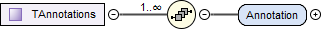
| Element | Description |
|---|---|
Annotations |
This optional element can be used to give additional information for any model entity. When it is present, it MUST contain 1 or more Annotation elements as specified below. |
Each annotation is encapsulated in an Annotation element, with a required type attribute specifying the type of the annotation, and arbitrary XML content from arbitrary namespaces.

In order to ensure uniqueness the annotation type SHOULD be provided in reverse domain name notation [ cf. Java package names or Apple UTIs ] of a domain that is controlled by the entity defining the semantics and content of the annotation. For vendor-specific annotations this SHOULD be a domain controlled by the tool vendor. For MAP-SSP-defined annotations, this MUST be a domain under the org.modelica or org.ssp-standard prefixes. Annotations that are not defined by MAP SSP MUST NOT use these two prefixes,
This mechanism can be used both for tool-specific annotations, as well as for layered standards (see Section 2.2) and other agreed-upon extensions, and thus provides a generic extension mechanism.
4.3. Top-Level Attributes
Top-level attributes are optional meta-data attributes common to all top-level container elements of all defined file formats.

| Attribute | Description |
|---|---|
author |
Optional attribute giving the name and/or organization of the author of the contents of this file. |
fileversion |
Optional attribute giving the version of the contents of this file. |
copyright |
Optional attribute giving information about copyrights of the contents of this file. |
license |
Optional attribute giving information about licensing of the contents of this file. |
generationTool |
Optional attribute giving information about the tool used to generate this file. |
generationDateAndTime |
Optional attribute giving the date and time this file was generated. |
4.4. Top-Level XML Child Elements
Top-level elements of a defined file format may have the following set of common child elements.
By design, the enumeration and unit definitions for each file are included in that file directly (i.e. enumeration and unit definitions are file scoped). This is intended to ensure the separate portability of individual files, with each file containing a self-consistent set of information. When processing information from multiple files, either from the same or separate system structures, it is up to the importing implementation to deal with any inconsistencies between files found.
4.4.1. Enumerations

This optional element MUST contain definitions for all enumerations referenced in a file.
[ As a file-based interchange standard, the natural scope for units and enumerations is the file scope, so that files can be parsed and processed separately, without the need for cross-file references or scoped references with the possibilities of shadowing and ambiguities. Upon import tools are free to merge unit information across files or separate them between hierarchy layers as they see fit. ]
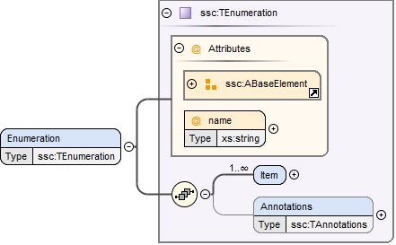
Each enumeration is defined through an Enumeration XML element:
| Attribute | Description |
|---|---|
name |
This required attribute provides a name, which MUST be unique within the set of enumerations in a given file. |
The following XML child elements are specified for the Enumeration element:
| Element | Description |
|---|---|
Item |
One or more elements specifying the items of the enumeration. |
4.4.1.1. Item

For each item in the enumeration there is one Item XML element with the following attributes:
| Attribute | Description |
|---|---|
name |
This required attribute provides a name for the enumeration item. |
value |
This required attribute provides a value for the enumeration item. |
4.4.2. Units

This optional element MUST contain definitions for all units referenced in a file.
[ As a file-based interchange standard, the natural scope for units and enumerations is the file scope, so that files can be parsed and processed separately, without the need for cross-file references or scoped references with the possibilities of shadowing and ambiguities. Upon import tools are free to merge unit information across files or separate them between hierarchy layers as they see fit. ]

Each unit is defined through a Unit XML element:
| Attribute | Description |
|---|---|
name |
This required attribute provides a name, which MUST be unique within the set of units in a given file. |
The following XML child elements are specified for the Unit element:
| Element | Description |
|---|---|
BaseUnit |
Required element defining the base unit of the given unit in SI units, see below. |
4.4.2.1. BaseUnit
This element defines the base unit of the given unit in SI units. This is completely aligned with the specification of base units in section 2.2.2 of the FMI 2.0 standard [FMI20].
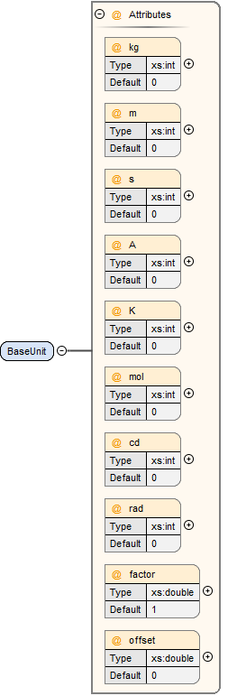
| Attribute | Description |
|---|---|
kg |
Optional attribute specifying the exponent of SI base unit kg, defaults to 0. |
m |
Optional attribute specifying the exponent of SI base unit m, defaults to 0. |
s |
Optional attribute specifying the exponent of SI base unit s, defaults to 0. |
A |
Optional attribute specifying the exponent of SI base unit A, defaults to 0. |
K |
Optional attribute specifying the exponent of SI base unit K, defaults to 0. |
mol |
Optional attribute specifying the exponent of SI base unit mol, defaults to 0. |
cd |
Optional attribute specifying the exponent of SI base unit cd, defaults to 0. |
rad |
Optional attribute specifying the exponent of SI base unit rad, defaults to 0. |
factor |
Optional attribute specifying an optional factor, defaults to 1. |
offset |
Optional attribute specifying an optional offset, defaults to 0. |
4.5. XML Element Groups
These XML element choices and sequences are common to multiple file formats. They are used inside elements to select one of multiple child elements, or provide common sequence content.
4.5.1. Type Choice
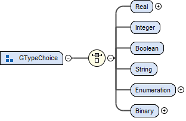
The following XML child elements denote the data type of a connector or dictionary entry. [ Note that in the case of connectors the use of a type element itself is optional, in the case of dictionary entries it is required ].
| Element | Description |
|---|---|
Real / Float64 / Float32 / |
Exactly one of these elements MUST be present to specify the type of the element. See below for details. |
4.5.1.1. Real

This type specifies that the connector in question represents an IEEE754 double precision floating point number.
| Attribute | Description |
|---|---|
unit |
This optional attribute gives the name of a unit. The name MUST match the name of a Unit entry in the Units XML element of the top-level element of the file. |
4.5.1.2. Float64
This type specifies that the connector in question represents an IEEE754 double precision floating point number.
| Attribute | Description |
|---|---|
unit |
This optional attribute gives the name of a unit. The name MUST match the name of a Unit entry in the Units XML element of the top-level element of the file. |
4.5.1.3. Float32
This type specifies that the connector in question represents an IEEE754 single precision floating point number.
| Attribute | Description |
|---|---|
unit |
This optional attribute gives the name of a unit. The name MUST match the name of a Unit entry in the Units XML element of the top-level element of the file. |
4.5.1.4. Integer

This type specifies that the connector in question represents a 32-bit signed integer number.
4.5.1.5. Int8

This type specifies that the connector in question represents a 8-bit signed integer number.
4.5.1.6. UInt8

This type specifies that the connector in question represents a 8-bit unsigned integer number.
4.5.1.7. Int16

This type specifies that the connector in question represents a 16-bit signed integer number.
4.5.1.8. UInt16

This type specifies that the connector in question represents a 16-bit unsigned integer number.
4.5.1.9. Int32

This type specifies that the connector in question represents a 32-bit signed integer number.
4.5.1.10. UInt32

This type specifies that the connector in question represents a 32-bit unsigned integer number.
4.5.1.11. Int64

This type specifies that the connector in question represents a 64-bit signed integer number.
4.5.1.12. UInt64

This type specifies that the connector in question represents a 64-bit unsigned integer number.
4.5.1.13. Boolean
This type specifies that the connector in question represents a Boolean value.
4.5.1.14. String

This type specifies that the connector in question represents a zero-terminated UTF-8 encoded string.
4.5.1.15. Enumeration

This type specifies that the connector in question represents an enumeration value, as specified by the enumeration definition. The underlying type of the connector is the same as for Integer.
| Attribute | Description |
|---|---|
name |
This required attribute gives the name of an enumeration which references into the defined enumerations of a document. The name MUST match the name of an Enumeration entry in the Enumerations XML element of the top-level element of the file. |
4.5.1.16. Binary

This type specifies that the connector in question represents a length-terminated binary data type, like the binary type defined for the FMI 3.0 standard, or substitute types like the binary type defined via the OSI Sensor Model Packaging specification [OSMP120].
| Attribute | Description |
|---|---|
mime-type |
This optional attribute specifies the MIME type of the underlying binary data, which defaults to the non-specific application/octet-stream type. This information CAN be used by the implementation to detect mismatches between connected binary connectors, or provide automatic means of conversion between different formats. It should be noted that the implementation is not required to provide this service, i.e. it remains the responsibility of the operator to ensure only compatible binary connectors are connected. The attribute value MUST be a valid MIME type as specified in RFC 2045; it CAN include additional arguments, etc., as specified in RFC 2045. |
4.5.2. Transformation Choice

The following XML child elements specify a transformation to be applied to a value prior to its use in a connection or parameter mapping:
| Element | Description |
|---|---|
LinearTransformation |
Specifies a linear transformation to be performed on the connection values. |
BooleanMappingTransformation |
Specifies a boolean mapping transformation to be performed on the connection values. |
IntegerMappingTransformation |
Specifies an integer mapping transformation to be performed on the connection values. |
EnumerationMappingTransformation |
Specifies an enumeration mapping transformation to be performed on the connection values. |
4.5.2.1. LinearTransformation

This element provides for a linear transformation of the source value to the target value, i.e. in the calculation target = factor * source + offset.
Note that conversions based on different units are performed, unless prevented by suppressUnitConversion, prior to the application of the linear transformation, i.e. the value of source is already converted to the target unit in the formula above. Linear transformations are only valid for connectors of Real, Float64 or Float32 type.
| Attribute | Description |
|---|---|
factor |
This attribute specifies an optional factor value to use in a linear transformation. The default is 1. |
offset |
This attribute specifies an optional offset value to use in a transformation. The default is 0. |
4.5.2.2. BooleanMappingTransformation

This element provides for a transformation of Boolean values based on a mapping table and is valid for connectors of Boolean type. Each mapping table entry is provided by a MapEntry element. Mapping entries MUST be unambiguous, i.e. for a given source value at a maximum one entry specifying that source value MUST be present. The mapping does not have to be complete, i.e. partial mappings CAN be specified. In that case values not mapped by a mapping entry are kept unchanged.
| Attribute | Description |
|---|---|
source |
This attribute gives the source value that this entry applies to. |
target |
This attribute gives the value to use instead of the source value when applying it to the system or component. |
4.5.2.3. IntegerMappingTransformation
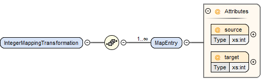
This element provides for a transformation of integer values based on a mapping table and is valid for connectors of all the integer types and Enumeration type. Each mapping table entry is provided by a MapEntry element. Mapping entries MUST be unambiguous, i.e. for a given source value at a maximum one entry specifying that source value MUST be present. The mapping does not have to be complete, i.e. partial mappings CAN be specified. In that case values not mapped by a mapping entry are kept unchanged.
When mapping to an Enumeration type, the target value MUST be a valid enumeration value for that type. When mapping from an Enumeration type, the source value MUST be a valid enumeration value for that type. This transformation can be applied between connectors of different Enumeration types, as long as all resulting target values are valid in the target Enumeration type.
The target values provided in transformation entries MUST be limited to the value space of the target connector. The source values provided in transformation entries CAN exceed the value space of the source connector. Such entries are ignored in the mapping process.
| Attribute | Description |
|---|---|
source |
This attribute gives the source value that this entry applies to. |
target |
This attribute gives the value to use instead of the source value when applying it to the system or component. |
4.5.2.4. EnumerationMappingTransformation

This element provides for a transformation of enumeration values based on a mapping table of their enumeration item names and is valid for connectors of Enumeration type. Each mapping table entry is provided by a MapEntry element. Mapping entries MUST be unambiguous, i.e. for a given source value at a maximum one entry specifying that source value MUST be present. The mapping does not have to be complete, i.e. partial mappings CAN be specified. In that case values not mapped by a mapping entry are kept unchanged.
When mapping to an Enumeration type, the target value MUST be a valid enumeration value for that type. When mapping from an Enumeration type, the source value MUST be a valid enumeration value for that type. This transformation can be applied between connectors of different Enumeration types, as long as all resulting target values are valid in the target Enumeration type.
| Attribute | Description |
|---|---|
source |
This attribute gives the source value that this entry applies to. |
target |
This attribute gives the value to use instead of the source value when applying it to the system or component. |
4.5.3. Dimension Sequence
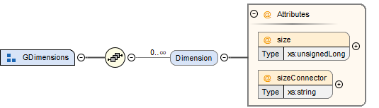
The Dimension element is used to specify the dimensions of array connectors, signal dictionary entries, or parameter values.
| Element | Description |
|---|---|
Dimension |
One or more instances of this element CAN be present to specify the dimensions of the containing model element. If no instances are present, the containing model element is scalar. See below for details. |
4.5.3.1. Dimension

This element specifies one dimension of a potentially multi-dimensional array connector, signal dictionary entry, or parameter value (modeling element). If no dimension elements are present in a modeling element, it is a scalar modeling element. The number of dimension elements in a modeling element provides the dimensionality of the array.
For connector elements, either the size or the sizeConnector attributes CAN be present on the element, indicating a fixed size, or a size that depends on the structural parameter or constant referenced by the sizeConnector attribute. If none of the attributes are present, then the size of the dimension is unspecified at the SSD level. It is considered an error if both attributes are present.
For signal dictionary and parameter value elements, only the size attribute can be used and therefore MUST be present on the element, indicating a fixed size. For those elements, it is considered an error if both attributes are present, or the size attribute is not present.
The following XML attributes are specified for the Dimension element:
| Attribute | Description |
|---|---|
size |
This attribute gives the size of this dimension of the array as a fixed, unchangeable number. |
sizeConnector |
This attribute references another connector by name, that gives the size of this dimension of the array connector, e.g. a structural parameter or a constant of the underlying component that gives the dimension size. |
4.5.4. MetaData Sequence
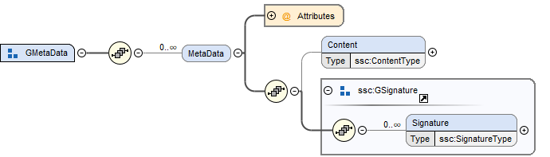
The MetaData element allows the specification of additional meta data for a given model element. Multiple (or no) MetaData elements may be present in a given model element.
| Element | Description |
|---|---|
MetaData |
One or more instances of this element CAN be present to specify meta data related to the containing model element. See below for details. |
4.5.4.1. MetaData
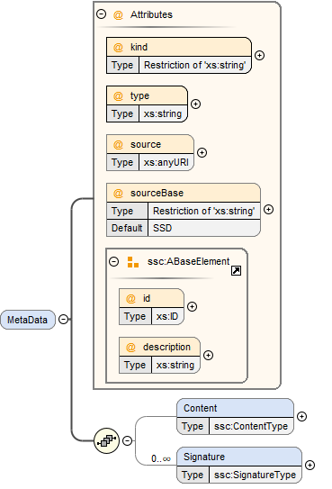
This element specifies a source of meta data related to the containing model element.
The MetaData element is structured by the following subordinated elements.
| Element | Description |
|---|---|
Content |
An instance of this element CAN be present to contain inlined content of the model element meta data.
If it is present, then the attribute |
Signature |
One or more instances of this element CAN be present to specify digital signature information on the meta data referenced by the enclosing MetaData element. It is left unspecified what types of signatures are used and/or available for now. See below for details. |
The following XML attributes are specified for the MetaData element:
| Attribute | Description |
|---|---|
kind |
This attribute indicates the kind of model element meta data that is referenced, i.e. what role it plays in relation to the model element being described.
The kind can be |
type |
This mandatory attribute specifies the MIME type of the meta data, which does not have a default value.
If no specific MIME type can be indicated, then the type |
source |
Optional attribute indicating the source of the meta data as a URI (cf. RFC 3986).
For purposes of the resolution of relative URIs the base URI is the URI of the SSD, if the sourceBase attribute is not specified or is specified as This allows the specification of meta data sources that reside inside the component (for example an FMU) through relative URIs. If the source attribute is missing, the meta data MUST be provided inline as contents of a Content element, which MUST NOT be present otherwise. |
sourceBase |
Defines the base the source URI is resolved against:
If the attribute is missing or is specified as |
4.5.4.2. Content
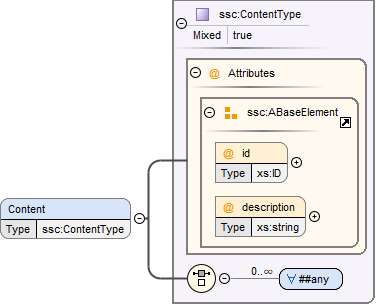
This element specifies the inlined content of the model element meta data.
When this element is present, its contents MUST be an srmd:SimulationResourceMetaData element as specified by the SRMD schema of the SSP Traceability Specification, if the type attribute of the enclosing MetaData element is application/x-srmd-meta-data, or any other valid XML content if the type attribute references another MIME type.
In that case there SHOULD be a layered specification that defines how embedding the content works for that MIME type.
4.5.4.3. Signature
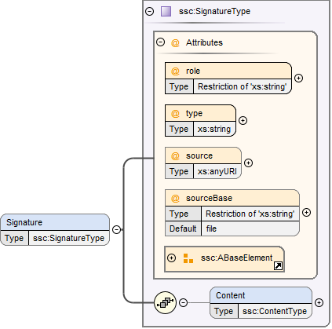
This element specifies digital signature information on the data or meta data referenced by the enclosing element: If the Signature element is contained within a MetaData element, it refers to the meta data referenced by the MetaData element. If the Signature element is contained within any other element, it refers to the content of that element.
The Signature element is structured by the following subordinated elements.
| Element | Description |
|---|---|
Content |
An instance of this element CAN be present to contain inlined content of the signature.
If it is present, then the attribute |
The following XML attributes are specified for the Signature element:
| Attribute | Description |
|---|---|
role |
This mandatory attribute specifies the role this signature has in the overall process.
It indicates whether the digital signature is intended to just convey the authenticity of the information (value |
type |
This mandatory attribute specifies the MIME type of the signature, which does not have a default value.
If no specific MIME type can be indicated, then the type |
source |
Optional attribute indicating the source of the signature as a URI (cf. RFC 3986).
For purposes of the resolution of relative URIs the base URI is the URI of the SSD, if the sourceBase attribute is not specified or is specified as This allows the specification of signature sources that reside inside the component (for example an FMU), or the meta data through relative URIs. If the source attribute is missing, the signature MUST be provided inline as contents of a Content element, which MUST NOT be present otherwise. |
sourceBase |
Defines the base the source URI is resolved against:
If the attribute is missing or is specified as |
5. System Structure Description (SSD)
A System Structure Description describes a nested hierarchy of interconnected (sub-)systems and atomic components.
A System Structure Description file (SSD, file extension .ssd) MUST be a well-formed XML 1.0 [XML10] file that conforms to the SystemStructureDescription XML Schema distributed as part of this standard.
The file MUST use the UTF-8 encoding.
All SSD-specific elements live in the http://ssp-standard.org/SSP1/SystemStructureDescription namespace, nicknamed ssd.
5.1. SystemStructureDescription

The root element of an SSD file MUST be a SystemStructureDescription element, which gives overall information about the system hierarchy described in this SSD file, including common meta-data, and acts as a bracket for the root system and its unit and enumeration definitions.
| Attribute | Description |
|---|---|
version |
This required attribute specifies the version of this specification that the system description conforms to. Only major and minor version number are included, the patch version number MUST NOT be included in this attribute. For the current release this MUST be 1.0. |
name |
This required attribute provides a name, which can be used for purposes of presenting the system structure to the user, for example when selecting individual variant SSDs from an SSP. |
The following XML child elements are specified for the SystemStructureDescription element:
| Element | Description |
|---|---|
System |
This required element specifies the root system of the model, see Section 5.3. |
Enumerations |
This optional element MUST contain definitions for all enumerations referenced in the system description file. See Section 4.4.1 for its definition. |
Units |
This optional element MUST contain definitions for all units referenced in the system description file. See Section 4.4.2 for its definition. |
DefaultExperiment |
This optional element MAY contain information of a default simulation setup that is supplied with the system definition for informational purposes, see description below. |
The root system of the model is specified through the required System element, see Section 5.3.
Any enumerations and units referenced in the system description file MUST be provided through the optional Enumerations and Units elements, as described in Section 4.4.1 and Section 4.4.2 respectively.
5.1.1. Default Experiment
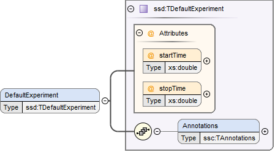
This element contains information of a default simulation setup that is supplied with the system definition for informational purposes.
[ Note that in contrast to FMI 2.0 only start and stop time are specified here, since values like step size or tolerance depend on the specific solver or master algorithms employed and are hence not specified in this global element. Additional solver or master algorithm specific information can be supplied through the annotation mechanism, or using a future layered standard. ]
[ The handling of systems comprising components with differing units for the independent variable depends on the implementation. It should be noted that since FMI 2.0 the unit of the independent variable for FMUs is clearly specified: It defaults to seconds, however other units can be specified by explicitly defining the independent variable. This standard does not specify additional measures to deal with differing independent variable units, but leaves this to the implementation. ]
| Attribute | Description |
|---|---|
startTime |
This optional attribute gives the start time of the simulation. |
stopTime |
This optional attribute gives the stop time of the simulation. |
5.2. Common Model Element Type
System, Component and SignalDictionaryReference XML elements are subtypes of a common TElement base type, that contains attributes and XML elements common to all kinds of model elements:

The following XML attributes are specified for the TElement type:
| Attribute | Description |
|---|---|
name |
This required attribute gives the model element a name, which is used to identify the model element inside its parent system. The name MUST be unique within the directly enclosing parent system. The name MUST NOT be the empty string. |
The following XML child elements are specified for the TElement type:
| Element | Description |
|---|---|
Connectors |
This optional element specifies the set of connectors of this model element, which represent the interface of the model element to the outside world. See below for details. |
ElementGeometry |
This optional element defines the geometry information of the component. See below for details. |
ParameterBindings |
This optional element specifies the set of parameter bindings of this model element. See below for details. |
5.2.1. Connectors

This optional element specifies the set of connectors of this model element, which represent the interface of the model element to the outside world. For components the set of connectors MUST match variables/ports of the underlying component implementation, e.g., for referenced FMI 2.0 FMUs, the name of a connector has to match the name attribute of the corresponding <ScalarVariable> element; for referenced FMUs that follow the OSI Sensor Model Packaging specification [OSMP120], the name of a connector of type Binary has to match the name attribute of the corresponding <osmp:osmp-binary-variable>. For FMI 3.0 FMUs, the connector name has to match either the name of the corresponding variable element, or one of its <Alias> elements.
Names of variable elements of an FMU might follow the “Variable Naming Conventions” specification as defined by the FMI standard. Hence, several ScalarVariables might be grouped as a structure or an array. However, the name of a connector MUST match the name of a single <ScalarVariable>.
Note that there is no requirement that connectors have to be present for all variables/ports of an underlying component implementation. At least those connectors MUST be present which are referenced in connections inside the SSD. [ Note that connectors do not have to be referenced in connections. Unreferenced connectors will yield the behavior that is specified for the underlying component variables/ports, e.g. an unconnected FMU input variable will remain at its default value during the whole simulation. The same is true for variables/ports that are not referenced through a connector at all. ]
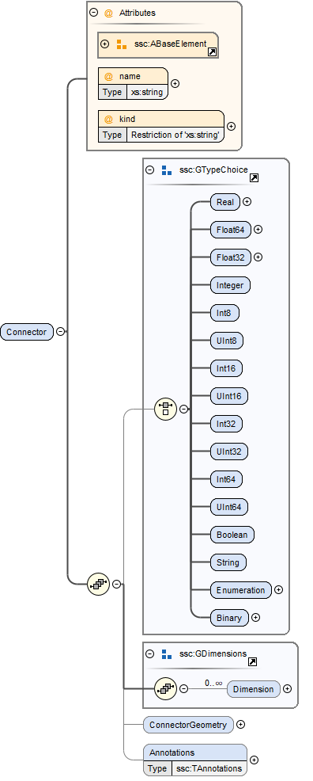
The following XML attributes are specified for the Connector element:
| Attribute | Description |
|---|---|
name |
This attribute gives the connector a name, which SHALL be unique within the given model element, and, for components, MUST match the name of a relevant variable/port in the underlying component implementation. In the case of referenced FMUs this MUST match the name of the relevant variable or alias in the referenced FMU. Note that there is no requirement that connectors have to be present for all variables/ports of an underlying component implementation. At least those connectors MUST be present which are referenced in connections inside the SSD. |
kind |
This attribute specifies the kind of the given connector, which indicates whether the connector is an input, an output, both (inout), unspecified, a local variable, a constant, a parameter, a calculated parameter (i.e. a parameter that is calculated by the component during initialization), or a structural parameter (i.e. a parameter that can be set during (re-)configuration mode). For components this MUST match the related kind of the underlying component implementation. For referenced FMUs it MUST match the combination of variability and causality: For FMI 2.0 and 3.0 this means that the causality of the variable MUST match the kind of the connector (with the kind inout not being valid for either FMI 3.0, 2.0, or 1.0). For FMI 1.0 this means that for connectors of kind input or output the causality of the variable MUST be input or output and the variability of the variable MUST be discrete or continuous (for outputs also constant and parameter are allowable). For connectors of kind parameter the causality of the FMI 1.0 variable MUST be input or internal and the variability MUST be parameter. For connectors of kind calculatedParameter the causality of the FMI 1.0 variable MUST be output and the variability MUST be parameter. For connectors of kind constant the causality of the FMI 1.0 variable MUST be output and the variability MUST be constant. Connectors of kind For SignalDictionaryReferences, the kind of a given connector can additionally be inout, which indicates that the semantics of the connector are derived from the connections going to the connector. This can be used for example to allow a connector to function as both an input and output within the same SignalDictionaryReference. Connectors of kind |
The following XML child elements are specified for the Connector element:
| Element | Description |
|---|---|
Real / Float64 / Float32 / |
Exactly one of these elements CAN be present to specify the type of the Connector. See Section 4.5.1 for details. |
Dimension |
One or more of these optional elements specify the connector array dimensions, making the connector an array connector. See Section 4.5.3 for details. |
Clock |
One or more of these optional elements associate the connector to a clock of the given name, which must be defined on the element that contains this connector. |
ConnectorGeometry |
This optional element defines the geometry information of the connector. See below for details. |
The type of the Connector is identified by the presence of one of the XML child elements Real, Float64, Float32, Integer, Int8, UInt8, Int16, UInt16, Int32, UInt32, Int64, UInt64, Boolean, String, Enumeration, Binary, or Clock.
The dimensionality of the Connector is given by the presence of one or more Dimension elements.
The association of a connector to a clock is given by the presence of one or more Clock elements.
When Modelica models are represented in SSP, built-in input and output connectors shall be mapped as follows:
| Modelica Type | SSP Type | SSP Kind |
|---|---|---|
RealInput |
ssc:Real |
input |
RealOutput |
ssc:Real |
output |
IntegerInput |
ssc:Integer |
input |
IntegerOutput |
ssc:Integer |
output |
BooleanInput |
ssc:Boolean |
input |
BooleanOutput |
ssc:Boolean |
output |
StringInput |
ssc:String |
input |
StringOutput |
ssc:String |
output |
Modelica connectors of more advanced types are currently mapped in the following way:
-
The connector type is ssc:Binary.
-
The media type is
text/x-modelicaand thepathparameter of the media type designates the path of the Modelica connector. -
Acausal Modelica connector types are mapped to connectors of kind unspecified.
[ Note that the current opaque mapping of more advanced types to Binary connectors is a temporary solution, and a more detailed mapping may be provided in future versions of the standard supporting more complex data types. ]
5.2.1.1. ConnectorGeometry

This optional XML element gives the geometry information of the connector. Note that x and y coordinates are in a normalized connector coordinate system, where 0,0 is the lower-left corner of the containing model element, and 1,1 is the upper-right corner of the model element, regardless of aspect ratio.
By default, the placement of connectors for a system’s inside and outside views is identical. The connector coordinate system is just translated to different actual coordinate systems, namely the one determined by ElementGeometry for the outside view and the one determined by SystemGeometry for the inside view.
For systems, optionally, different placement of connectors for the inside view of the system can be specified with the systemInnerX and systemInnerY coordinates. This enables preserving the inside system layout when integrating a system in a system structure and avoiding unintended changes to the position of the connectors on the inside view of the system when making layout changes on the outside view and vice versa.
If defined, this ConnectorGeometry overrides any ConnectorGeometry of a System in a referenced SSD file or any port location defined by an FMU (as defined in the relevant FMI standards) for the x and y coordinates of the outside view. Any inside view is not overridden.
| Attribute | Description |
|---|---|
x |
Required attribute giving the x coordinate of the connector inside the connector coordinate system. |
y |
Required attribute giving the y coordinate of the connector inside the connector coordinate system. |
systemInnerX |
Optional attribute giving a separate x coordinate of the connector for the inside view of a system. |
systemInnerY |
Optional attribute giving a separate y coordinate of the connector for the inside view of a system. |
[ Graphical example for a ConnectorGeometry:
 ]
]
5.2.2. ElementGeometry

This optional XML element defines the geometry information of the model element, where (x1,y1) and (x2,y2) define the positions of the lower-left and upper-right corners of the model element in the coordinate system of its parent system. If x1>x2 this indicates horizontal flipping, y1>y2 indicates vertical flipping.
The optional attribute rotation (in degrees) defines an additional rotation (applied after flipping), where positive numbers indicate a counter clockwise rotation.
[Sometimes such a counter clockwise orientation is also called a left rotation (x→y), with the coordinate system orientation: x → right, y → up)]
The optional attribute iconSource defines an icon URI with the same semantics as for the source attribute of the Component element. If defined, this icon overrides any icon that may be defined in an .fmu file (as defined in the relevant FMI standards). It is RECOMMENDED that implementations that support graphical presentation support at least PNG and SVG file formats for the icon.
The optional attribute iconRotation defines the rotation (in degrees) of the icon. The optional attribute iconFixedAspectRatio defines whether the icon shall be fit into the extent defined by (x1,y1), (x2,y2) and iconRotation with fixed aspect ratio. The optional attribute iconFlip defines whether any flipping indicated by (x1,y1), (x2,y2) shall be applied to the icon graphics, too.
[If no explicit icon is given, the icon used by the tool to represent the system should be rotated accordingly.]
| Attribute | Description |
|---|---|
x1 |
Required attribute giving the x coordinate of the lower left corner of the model element inside the coordinate system of its parent system. |
y1 |
Required attribute giving the y coordinate of the lower left corner of the model element inside the coordinate system of its parent system. |
x2 |
Required attribute giving the x coordinate of the upper right corner of the model element inside the coordinate system of its parent system. |
y2 |
Required attribute giving the y coordinate of the upper right corner of the model element inside the coordinate system of its parent system. |
rotation |
Optional attribute defines an additional rotation in degrees that is to be applied after any flipping, where positive numbers indicate left rotation (x→y). |
iconSource |
Optional attribute defines an icon URI with the same semantics as for the source attribute of the Component element. If defined, this icon overrides any icon that may be defined in an .fmu file (as specified in the relevant FMI standards). It is RECOMMENDED that implementations that support graphical presentation support at least PNG and SVG file formats for the icon. |
iconRotation |
Optional attribute defines the rotation (in degrees) of the icon, where positive numbers indicate left rotation (x→y). |
iconFlip |
Optional attribute defines whether any flipping indicated by (x1,y1), (x2,y2) shall be applied to the icon graphics, too, or not. |
iconFixedAspectRatio |
Optional attribute defines whether the icon shall be fit into the extent defined by (x1,y1), (x2,y2) with a fixed aspect ratio, or without keeping the aspect ratio fixed. |
[ Graphical example for an ElementGeometry:
 ]
]
[The next examples show the effects of attributes of the ElementGeometry on the visual representation of a reference element:
*Non-transformed reference* (icon fills rectangle, left 2 inputs, right 1 output)
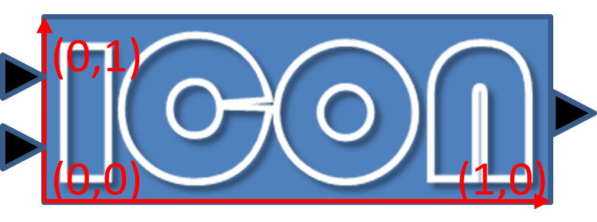
Coordinate systems:
Red: ConnectorGeometry
Blue: ElementGeometry
*Example 1: No flip* (x1<x2, y1<y2), rotation=0
iconRotation=0, iconFixedAspectRatio=true, iconFlip=IGNORED (relevant only if element is flipped)
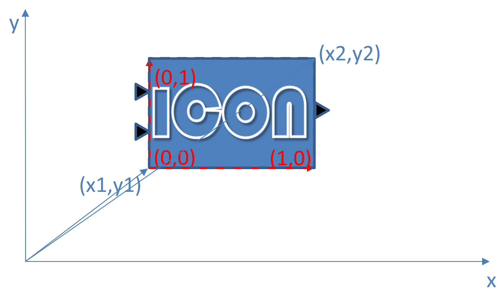
*Example 2: No flip* (x1<x2, y1<y2), rotation=0
iconRotation=0, iconFixedAspectRatio=false, iconFlip=IGNORED
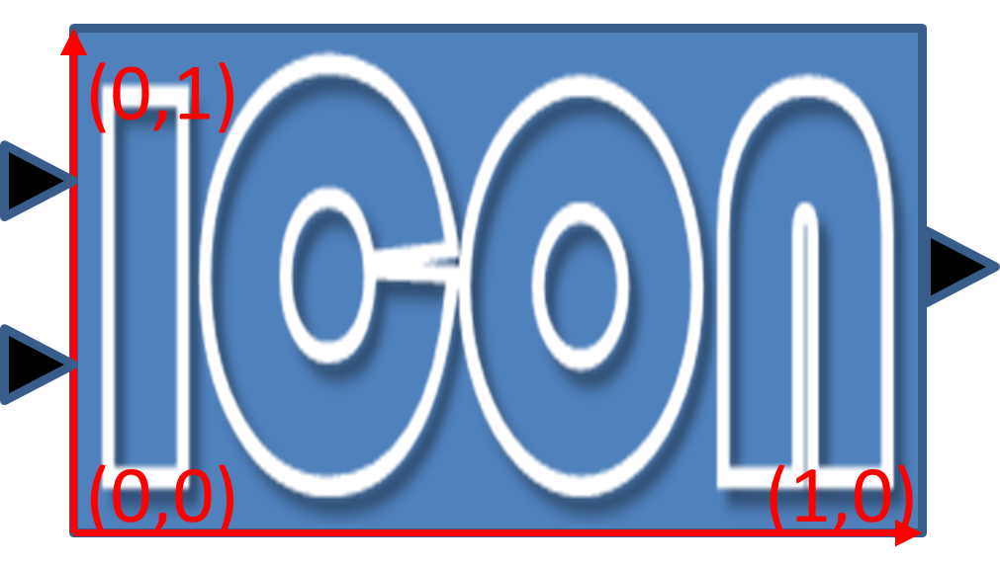
_
_
*Example 3: No flip* (x1<x2, y1<y2), rotation=ϕ
iconRotation=ϕ, iconFixedAspectRatio=true, iconFlip=IGNORED

*Example 4: No flip* (x1<x2, y1<y2), rotation=ϕ
iconRotation=ϕ, iconFixedAspectRatio=false, iconFlip=IGNORED

_
_
*Example 5: No flip* (x1<x2, y1<y2), rotation=ϕ
iconRotation=0, iconFixedAspectRatio=true, iconFlip=IGNORED

*Example 6: No flip* (x1<x2, y1<y2), rotation=ϕ
iconRotation=0, iconFixedAspectRatio=false, iconFlip=IGNORED

_
_
*Example 7: Horizontal flip* (x1>x2), rotation=ϕ
iconRotation=ϕ, iconFixedAspectRatio=true, iconFlip=true
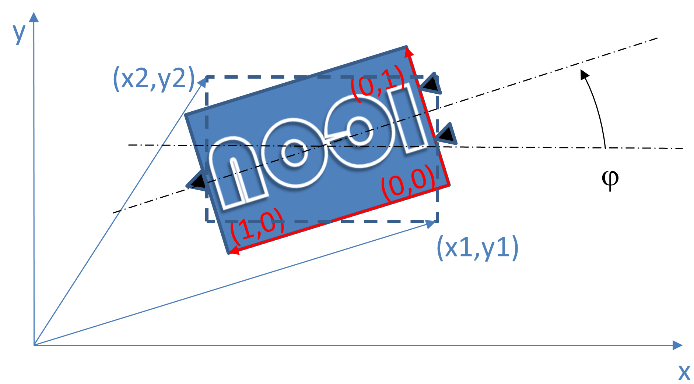
*Example 8: Horizontal flip* (x1>x2), rotation=ϕ
iconRotation=ϕ, iconFixedAspectRatio=false, iconFlip=false

*Example 9: Horizontal flip* (x1>x2), rotation=ϕ
iconRotation=ϕ, iconFixedAspectRatio=true, iconFlip=false

_
_
*Example 10: Vertical flip* (y1>y2), rotation=0
iconRotation=0, iconFixedAspectRatio=true, iconFlip=false

*Example 11: Horizontal and vertical flip* (x1>x2, y1>y2), rotation=0
iconRotation=0, iconFixedAspectRatio=true, iconFlip=false
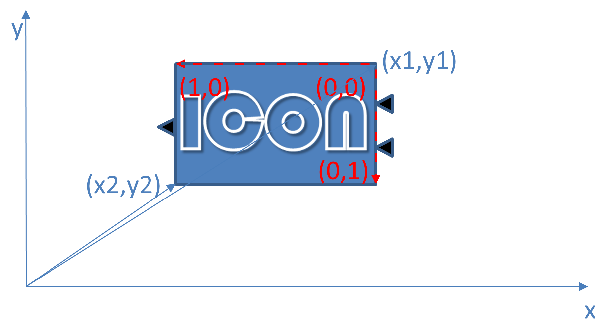
*Example 12: Horizontal and vertical flip* (x1>x2, y1>y2)*, *rotation=0
iconRotation=0, iconFixedAspectRatio=true, iconFlip=true
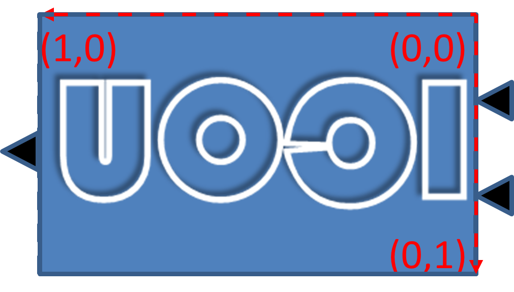
_
_
*Example 13: Horizontal and vertical flip* (x1>x2, y1>y2), rotation=ϕ
iconRotation=ϕ, iconFixedAspectRatio=true, iconFlip=true

*Example 14: Horizontal and vertical flip* (x1>x2, y1>y2), rotation=ϕ
iconRotation=ϕ, iconFixedAspectRatio=false, iconFlip=true

*Example 15: Horizontal and vertical flip* (x1>x2, y1>y2), rotation=ϕ
iconRotation=ϕ, iconFixedAspectRatio=true, iconFlip=false
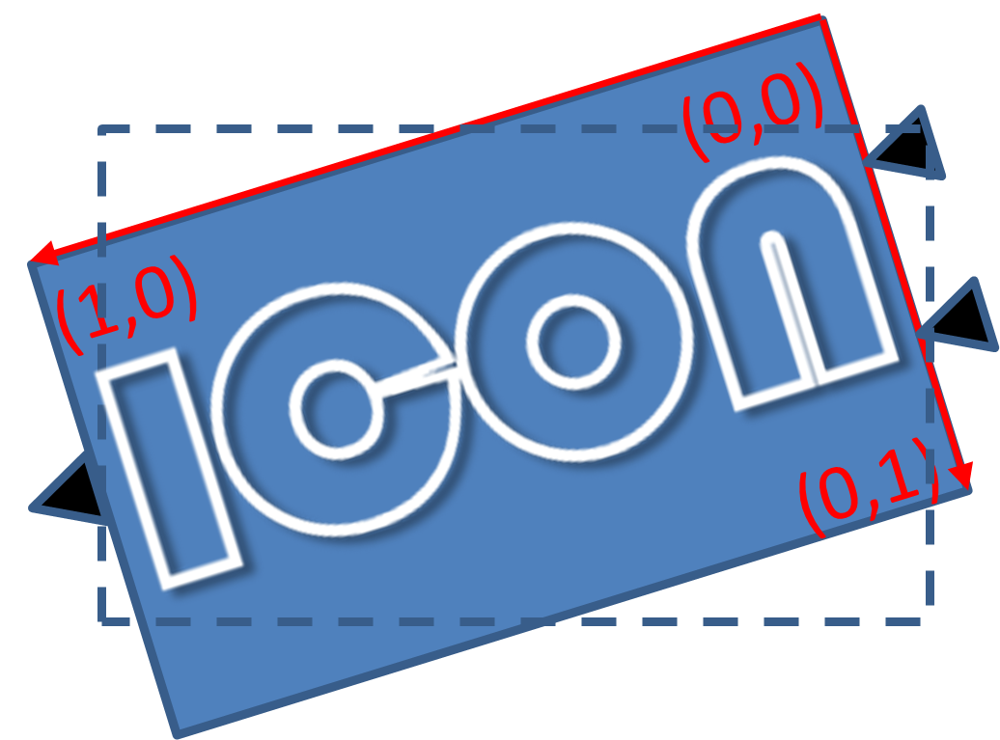
]
5.2.3. ParameterBindings
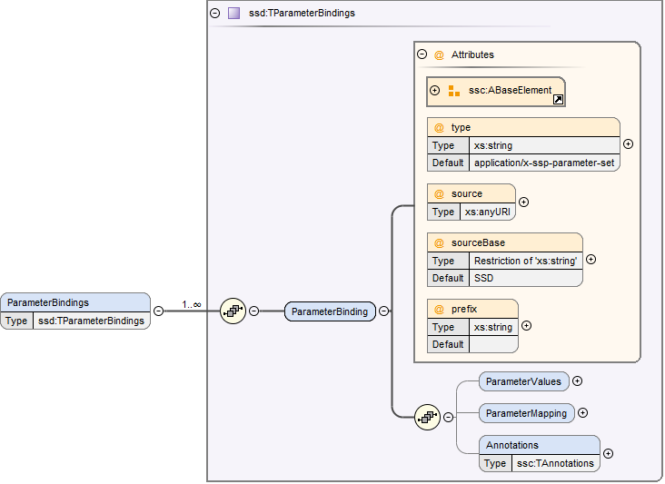
The ParameterBindings element provides the parameter bindings for a component or system, where each binding is specified in a ParameterBinding element. A parameter binding applies a set of parameter values (a parameter set), supplied by a parameter source (for example a parameter file) to parametrize a component or system.
For FMU components this allows the parametrization of the FMU’s parameters, structural parameters, and start values of other variables. For systems this allows the parametrization of complete (sub-)hierarchies of sub-systems and components using a hierarchical naming scheme.
When no parameter mapping is specified as part of the binding, then all the parameter values provided by the parameter source are applied using their original names. If a parameter matching this name is found in the system, the parameter value is applied. Otherwise that parameter value is ignored.
When a parameter mapping is specified as part of the binding, then only the mapped parameter values are applied, using their mapped-to names. Non-mapped parameter values are not applied in this case.
For FMU components parameter values are applied to FMU variables based on the variables’ names in the FMU, i.e. it is not required (but allowed) that those variables are referenced in connectors in the system description.
For systems parameter values are applied using the hierarchical names of parameters or other variables in the system.
The hierarchical names of the parameters or other variables of a system are formed in the following way:
-
Any variables of the system exposed through connectors of the system have the name of the connector as their name.
-
For all elements of the system, the hierarchical names of the variables of those elements are formed by prepending the element name and a dot to the hierarchical names of the variables in that element.
[ For example for a system A containing a system B which contains an exposed parameter named SP1 and an element C with a parameter P2, the hierarchical names of the parameters in system A are B.SP1 and B.C.P2 respectively. The hierarchical name of those parameters inside system B are SP1 and C.P2 respectively, and the hierarchical name of P2 inside element C is just P2.
Therefore a parameter binding on element C shall reference the parameter P2 using its local name P2, not the hierarchical name C.P2, which would be valid for a parameter binding on system B. ]
Note that the hierarchical names of parameters or other variables do not have to be unique: If two or more variables end up with the same hierarchical name (due to so-called punning), then any parameter values being applied to that name MUST be applied to all of them. If this is not wanted, then it is up to the generating implementation to ensure that no punning occurs, through proper choice of system and element names.
[ For example, for a system A containing a system B with component C and variable D, and system A also containing a component called B.C and variable D, both variables will have the hierarchical name A.B.C.D. If this is not wanted, then proper care should be taken in naming component B.C and system B/component C in non-conflicting ways. The standard allows such punning, because the ability to have a . in the name of systems or components allows for example the replacement of a monolithic component with a system of components, or vice-versa, while keeping parameter names identical. ]
More than one ParameterBinding can be supplied. In this case all of the parameters found will be used to parametrize the component, with parameter values in ParameterBinding sources appearing at a succeeding position in the element order taking priority over prior sources at the same hierarchy level, should a parameter be included in more than one ParameterBinding source.
When ParameterBinding sources on multiple levels of the hierarchy supply values for the same parameter, bindings at a higher hierarchy level take precedence over lower levels, i.e. bindings at a system level take precedence over bindings at a sub-system or component level.
Parameter bindings for FMU components can be used to set any initial values in the FMU which are legal to change. It is assumed that the parameterization is applied prior to initializing for FMI 1.0, or before entering initialization mode for FMI 2.0/3.0. For structural parameters it is assumed that the parameterization is applied in configuration mode for FMI 3.0.
This means that variables eligible for parameterization are those with:
-
either causality = "input" or a start value for FMI 1.0
-
variability != "constant" and initial = "exact" or "approx" for FMI 2.0
All kinds of system connectors can be parameterized. In case the system level connectors are connected to FMU components, the parameterization MUST be compatible with the variable in the connected FMU.
Parameter bindings that apply to a component that references another SSD/SSP are handled as if the top-level system of the SSD/SSP was present in the enclosing system instead of the component with one special case: Any parameter bindings in the component are treated as if they were present in the top-level system of the SSP/SSD after all parameter bindings of the system. Therefore they take priority over any of the existing parameter bindings (for parameters with identical names).
| Attribute | Description |
|---|---|
type |
Optional attribute giving the MIME type of the parameter source, which defaults to application/x-ssp-parameter-set to indicate the SSP parameter set file format. No further types are currently defined, but can of course be added at a later date, for pre-existing parameter file formats, like CDF, etc. |
source |
Optional attribute indicating the source of the parameters as a URI (cf. RFC 3986). For purposes of the resolution of relative URIs the base URI is the URI of the SSD, if the sourceBase attribute is not specified or is specified as SSD, and the URI of the referenced component if the base attribute is specified as component. This allows the specification of parameter sources that reside inside the component (for example an FMU) through relative URIs. If the source attribute is missing, the parameter set MUST be provided inline as contents of a ParameterValues element, which MUST NOT be present otherwise. |
sourceBase |
Defines the base the source URI is resolved against: If the attribute is missing or is specified as SSD, the source is resolved against the URI of the SSD, if the attribute is specified as component the URI is resolved against the (resolved) URI of the component source. |
prefix |
Defines the optional prefix for name resolution and mapping purposes for this binding. If this attribute is empty or not supplied no prefix is used for name resolution and mapping, otherwise the specified prefix is prepended to all names in the parameter source prior to processing the normal name resolution or name mapping rules. This allows the user to apply a parameter set normally intended for a component (and thus containing bare parameter names) at a system level targeted to one element of the system by supplying the name of the element plus a dot as a prefix on the binding, thus causing all parameter names in the parameter set to be treated as if they were specified with proper hierarchical names. |
The following XML child elements are specified for the ParameterBinding element:
| Element | Description |
|---|---|
ParameterValues |
This optional element can be used to provide parameter values inline to the parameter binding, in which case the source attribute of the ParameterBinding element MUST be empty. |
ParameterMapping |
This optional element provides an optional parameter mapping, which specifies how the parameter names and values provided in the parameter source are to be mapped to the parameters of the component or system in question. If no mapping is supplied, the parameter names of the parameter source are used as is for name matching against the names of parameters in the component or system and the values of the parameter source are not transformed further before being applied. See below for details. |
5.2.3.1. ParameterValues

When this element is present, its contents MUST be an ssv:ParameterSet element as specified by the SystemStructureParameterValues schema, if the type attribute of the enclosing ParameterBinding element is application/x-ssp-parameter-set, or any other valid XML content if the type attribute references another MIME type. In that case there SHOULD be a layered specification that defines how embedding the content works for that MIME type.
5.2.3.2. ParameterMapping
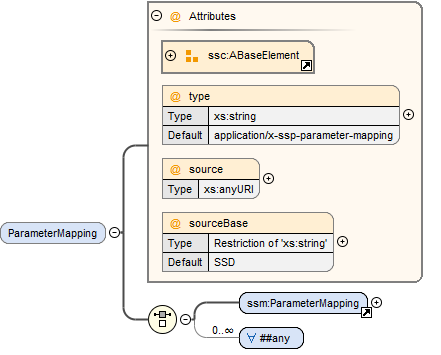
This element provides a parameter mapping, which specifies how the parameter names and values provided in the parameter source are to be mapped to the parameters of the component or system in question. If no mapping is supplied, the parameter names of the parameter source are used as is for name matching against the names of parameters in the component or system and the values of the parameter source are not transformed further before being applied.
| Attribute | Description |
|---|---|
type |
Optional attribute giving the MIME type of the parameter mapping, which defaults to |
source |
Optional attribute indicating the source of the parameter mapping as a URI (cf. RFC 3986). For purposes of the resolution of relative URIs the base URI is the URI of the SSD, if the sourceBase attribute is not specified or is specified as SSD, and the URI of the referenced component if the base attribute is specified as component. This allows the specification of parameter mapping sources that reside inside the component (for example an FMU) through relative URIs. If the source attribute is missing, the parameter mapping MUST be provided inline as contents of the ParameterMapping element, which MUST be empty otherwise. |
sourceBase |
Defines the base the source URI is resolved against: If the attribute is missing or is specified as SSD, the source is resolved against the URI of the SSD, if the attribute is specified as component the URI is resolved against the (resolved) URI of the component source. |
The contents of the element MUST be empty if the source attribute is present.
If the source attribute is not present, the contents MUST be an ssm:ParameterMapping element, if the type attribute of this element is application/x-ssp-parameter-mapping, or any other valid XML content if the type attribute references another MIME type.
In that case there SHOULD be a layered specification that defines how embedding the content works for that MIME type.
5.3. System
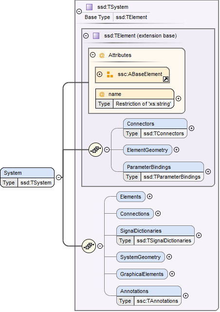
This element describes a system, which can contain components, signal dictionary references and other systems as elements, connectors as an interface to the outside world, and connections connecting the connectors of itself and of its elements to one another.
The following XML child elements are specified for the System element:
| Element | Description |
|---|---|
Elements |
This optional element provides the elements contained in this system, see specification below. |
Connections |
This optional element provides the connections between connectors of the system, connectors of its elements and inbetween those connectors. |
SignalDictionaries |
This optional element provides the set of defined signal dictionaries for the system. |
SystemGeometry |
This optional element defines the extent of the system canvas for the system. |
GraphicalElements |
This optional element contains the set of purely graphical elements that are contained in the system, like notes, which have no semantic impact on the system but aid in presentation of the system in graphical user interfaces. |
5.3.1. Elements

This optional element contains one or more components, signal dictionary references or systems that are the internal content of the given system.
The following XML child elements are specified for the Elements element:
| Element | Description |
|---|---|
Component |
A component, see Section 5.4. |
SignalDictionaryReference |
A reference to a signal dictionary, see Section 5.5. |
System |
A nested system, see Section 5.3. |
5.3.2. Connections
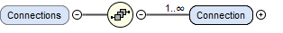
This optional element provides the connections between connectors of the system, connectors of its elements and inbetween those connectors.
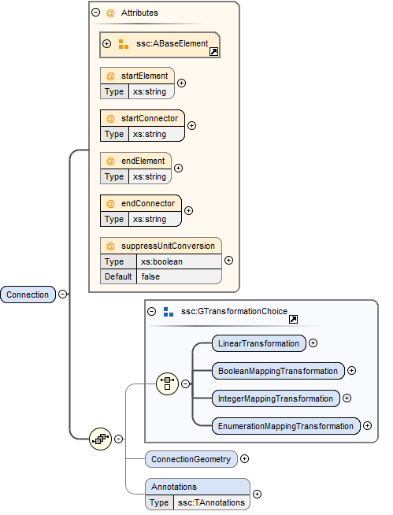
This element specifies a connection between two connectors, either of the system or its directly contained elements. Note that only connections between certain kinds of connectors are allowed, as specified in Section 5.3.2.1. Note also that the terms start and end in the attribute names of the connector, like startElement or endConnector, do not denote directionality of the data flow implied by the connector. That is determined by the combination of the semantics of the actual connectors (variables/ports) connected and their kind attributes.
| Attribute | Description |
|---|---|
startElement |
Optional attribute giving the the name of the element that contains the connector given as startConnector. If the attribute is not present, then the startConnector names a connector on this system. |
startConnector |
Required attribute giving the name of the connector that is the start of the connection. If startElement is not supplied this indicates a connector on this system, otherwise the connector is to be found on the given element. |
startIndices |
Optional attribute giving the list of indices of an array connector that this connection is restricted to. If not supplied this indicates that this connection applies to the whole connector, not just a single element. |
endElement |
Optional attribute giving the name of the element that contains the connector given as endConnector. If the attribute is not present, then the endConnector names a connector on this system. |
endConnector |
Required attribute giving the name of the connector that is the end of the connection. If endElement is not supplied this indicates a connector on this system, otherwise the connector is to be found on the given element. |
endIndices |
Optional attribute giving the list of indices of an array connector that this connection is restricted to. If not supplied this indicates that this connection applies to the whole connector, not just a single element. |
suppressUnitConversion |
Optional attribute specifying whether automatic conversions between start and end connector are performed using unit information potentially available for both start and end definitions. If this attribute is supplied and its value is true, then the environment will not perform any automatic unit conversions, otherwise automatic unit conversions can be performed. This is also relevant in conjunction with the optional linear transformation supplied via the LinearTransformation element: With suppressUnitConversion = true, the linear transformation is performed instead of any unit conversions, whereas otherwise the linear transformation is performed in addition to any unit conversions. |
5.3.2.1. Allowed Connections
The following table specifies all allowed connections, depending on the owner of the connectors (connector of element or connector of the enclosing system) and the kind of the connectors being connected. Note that source and destination in the following table indicate the resulting data flow and are unrelated to the start and end designation of a connection, as described above.
Implementations MUST NOT specify connections that are not of one of the allowed combinations in the following table. Implementations MUST ensure that data flow is specified unambiguously, including ensuring that not multiple connections with inbound data flow enter into a connector signifying an input, inout, parameter, or structuralParameter connector of an element, or a local, constant, calculatedParameter, or output connector of an enclosing system.
For connectors of kind unspecified it is ultimately implementation-defined whether and how connections are allowed, as the exact semantics depend on the underlying modeling language. For the purposes of the following table, connectors of kind unspecified are treated as connectors of whatever kind is needed to make the connection allowed, i.e. they serve a wild-card role. The handling of conflicts that arise in transitive connections from conflicting wild-card assignments is implementation-defined.
It is implementation-defined whether connections between connectors of different types are allowed, and to what extent conversions are performed.
This includes type conversions that can be performed without data loss, e.g. converting from an output of type Float32 to an input of type Float64 or Real, as well as conversions that can potentially lead to data loss, e.g. converting from an output of type Float64 to an input of type Float32 or Int8.
It is also implementation-defined how and whether any error-handling at runtime is performed in those cases.
It is also implementation-defined whether and which connections between connectors that are associated to different clocks are allowed.
The table below applies directly to connectors of type Clock with an intervalVariability of triggered.
For connectors of type Clock with an intervalVariability that is not triggered the table applies with the following provisions:
* The connector is treated as a connector of kind output for the purposes of determining permissible connections.
* It is implementation-defined whether and which connections between two connectors of kind input with intervalVariability that is not triggered are allowed. Such connections are deemed to establish equality constraints on the clock ticks, where the resolution mechanism, including direction of resolution is implementation-defined.
For all connections of an element connector of type Clock to a system connector of type Clock, the intervalVariability of the two connectors must be identical.
| Source | Destination | ||
|---|---|---|---|
Owner |
Kind |
Owner |
Kind |
System |
structuralParameter |
System |
calculatedParameter |
System |
structuralParameter |
System |
output |
System |
structuralParameter |
System |
local |
System |
parameter |
System |
calculatedParameter |
System |
parameter |
System |
output |
System |
parameter |
System |
local |
System |
input |
System |
output |
System |
input |
System |
local |
System |
structuralParameter |
Element |
structuralParameter |
System |
structuralParameter |
Element |
parameter |
System |
structuralParameter |
Element |
input |
System |
structuralParameter |
Element |
inout |
System |
parameter |
Element |
parameter |
System |
parameter |
Element |
input |
System |
parameter |
Element |
inout |
System |
input |
Element |
input |
System |
input |
Element |
inout |
Element |
constant |
Element |
structuralParameter |
Element |
constant |
Element |
parameter |
Element |
constant |
Element |
input |
Element |
constant |
Element |
inout |
Element |
calculatedParameter |
Element |
parameter |
Element |
calculatedParameter |
Element |
input |
Element |
calculatedParameter |
Element |
inout |
Element |
output |
Element |
input |
Element |
output |
Element |
inout |
Element |
local |
Element |
input |
Element |
local |
Element |
inout |
Element |
inout |
Element |
input |
Element |
constant |
System |
constant |
Element |
constant |
System |
calculatedParameter |
Element |
constant |
System |
output |
Element |
constant |
System |
local |
Element |
calculatedParameter |
System |
calculatedParameter |
Element |
calculatedParameter |
System |
output |
Element |
calculatedParameter |
System |
local |
Element |
output |
System |
output |
Element |
output |
System |
local |
Element |
local |
System |
output |
Element |
local |
System |
local |
Element |
inout |
System |
output |
Element |
inout |
System |
local |
The following XML child elements are specified for the Connection element:
| Element | Description |
|---|---|
LinearTransformation / BooleanMappingTransformation / IntegerMappingTransformation / EnumerationMappingTransformation |
Specifies an optional transformation for the connection. If any, exactly one of these elements MUST be present to specify the type of the transformation. See Section 4.5.2 for details. |
ConnectionGeometry |
This optional element defines the geometry information of the connection. |
5.3.2.2. ConnectionGeometry

This optional element defines the geometry information of the connection. The start and end coordinates of the connection are derived automatically through the coordinates of the corresponding connectors. The only relevant geometry information provided by the connection geometry is a, by default empty, list of intermediate waypoint coordinates, which are to be interpreted as for the svg:polyline primitive, i.e. as waypoints for straight line segments, with the first and last points added automatically based on the translated coordinates of the start and end connectors. Note that x and y coordinates are in the coordinate system of the enclosing system.
| Attribute | Description |
|---|---|
pointsX |
Required attribute giving a list of x coordinates of the intermediate waypoints. |
pointsY |
Required attribute giving a list of y coordinates of the intermediate waypoints. |
[ Graphical example for a ConnectionGeometry:
 ]
]
5.3.3. SignalDictionaries
Signal dictionaries can be seen as a description of a collection of signals. Such collections can also be seen as a “signal bus” (like a CAN-bus in embedded systems). One can use a signal dictionary as a specification of how a collection of signals shall look like with definition of signal names and their units during a design phase. When a large number of signals have to be handled, signal dictionaries can help to keep a system description clearly represented.
Another benefit of signal dictionaries is the possibility to define a mapping between two or more signal dictionaries that may differ by names or units, which is a common case when components are integrated into a system that come from different sources without a common design or architecture.

This optional element provides the set of defined signal dictionaries for the system.
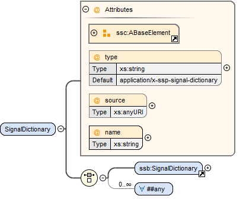
A signal dictionary is a collection of signals which can be accessed in different systems at different levels of the hierarchy through signal dictionary references referencing the signal dictionary.
| Attribute | Description |
|---|---|
name |
Required attribute giving the signal dictionary a name, which shall be unique within the directly enclosing system. The name is used for purposes of specifying the signal dictionary referenced by a signal dictionary reference. Name lookups occur in hierarchical fashion, i.e. the name is first looked up in the system that contains a signal dictionary reference. If that lookup yields no match, the lookup is performed on the enclosing system, etc., until a match is found. It is an error if no matching signal dictionary is found. |
type |
Optional attribute giving the MIME type of the signal dictionary, which defaults to |
source |
This attribute indicates the source of the signal dictionary as a URI (cf. RFC 3986). For purposes of the resolution of relative URIs the base URI is the URI of the SSD. If the source attribute is missing, the signal dictionary MUST be provided inline as contents of the SignalDictionary element, which MUST be empty otherwise. For the default type |
5.3.4. SystemGeometry

This element defines the extent of the system canvas. (x1,y1) and (x2,y2) define the lower-left and upper-right corner, respectively. Different from ElementGeometry, where x1 > x2 and y1 > y2 indicate flipping, x1 < x2 and y1 < y2 MUST hold here.
If undefined, the system canvas extent defaults to the bounding box of all ElementGeometry elements of the child elements of the system.
When displaying the content of a sub-system together with the enclosing parent system, the transformation of co-coordinates inside the sub-system to co-ordinates in the parent system is defined by the transformation from SystemGeometry.\{x1,y1,x2,y2} to ElementGeometry.\{x1',y1',x2',y2'}, where ElementGeometry.z' is the respective coordinate of the sub-system when instantiated in the parent system after rotation.
When importing or exporting systems, the nominal unit of the coordinates is 1 mm for all axis. The nominal unit is intended to ensure similar visual sizing and appearances when combining systems from different implementations.
[ The visual appearance of a length of 1 should be (roughly) 1 mm. Importing and exporting tools that support a graphical representation might use different coordinate systems. This common unit for coordinates is defined to allow a seamless integration of SSPs from different sources. Without such a common unit, an SSP exported in one tool might appear huge or tiny in the other tool. Hence, the exporting tool has to scale from its own coordinate system when exporting and the importing tool has to scale to its own coordinate system when importing an SSP. ]
| Attribute | Description |
|---|---|
x1 |
Required attribute giving the x coordinate of the lower-left corner of the system canvas. |
y1 |
Required attribute giving the y coordinate of the lower-left corner of the system canvas. |
x2 |
Required attribute giving the x coordinate of the upper-right corner of the system canvas. |
y2 |
Required attribute giving the y coordinate of the upper-right corner of the system canvas. |
[ Graphical example for a SystemGeometry:
 ]
]
[ Graphical example showing the interplay of SystemGeometry, ElementGeometry, ConnectorGeometry, and ConnectionGeometry:
 ]
]
[ Example how the given Geometries can be used to transform coordinates to show elements on different hierarchy levels in a single graphic:
Subsystem A is an element with an ElementGeometry (x1_Ae, y1_Ae, x2_Ae, y2_Ae) and a SystemGeometry (x1_As, y1_As, x2_As, y2_As).
B is an element in subystem A with an ElementGeometry coordinates (x1_Be, y1_Be, x2_Be, y2_Be).

To plot the element B in the system where A is located, use the following coordinate transformation:
x1_Be → (x1_Ae + (x1_Be - x1_As) * (x2_Ae - x1_Ae) / (x2_As - x1_As))
y1_Be → (y1_Ae + (y1_Be - y1_As) * (y2_Ae - y1_Ae) / (y2_As - y1_As))
x2_Be → (x1_Ae + (x2_Be - x1_As) * (x2_Ae - x1_Ae) / (x2_As - x1_As))
y2_Be → (y1_Ae + (y2_Be - y1_As) * (y2_Ae - y1_Ae) / (y2_As - y1_As)) ]
5.3.5. GraphicalElements

This optional element contains the set of purely graphical elements that are contained in the system, like notes, which have no semantic impact on the system but aid in presentation of the system in graphical user interfaces.
Currently the only graphical element defined is the Note element, which allows for simple textual notes to be placed into the system diagram, but in the future more elements might be added as needed for exchange of graphical information.
5.3.5.1. Note

This element defines a graphical note to be placed on the canvas of the enclosing system. It is sized using the attributes so that the coordinates (x1,y1) and (x2,y2) define the positions of the lower-left and upper-right corners of the note in the coordinate system of the parent.
The note text is given by the text attribute. The presentation expectation is that the text is automatically sized and wrapped in such a way that it fits the note area. If this would lead to too small text, it might be necessary to provide an interactive method (like expanding triangle, or popup, or other means) to show the remainder of the note text. Inside the text attribute, newlines indicate paragraph breaks.
| Attribute | Description |
|---|---|
x1 |
Required attribute giving the x coordinate of the lower-left corner of the note. |
y1 |
Required attribute giving the y coordinate of the lower-left corner of the note. |
x2 |
Required attribute giving the x coordinate of the upper-right corner of the note. |
y2 |
Required attribute giving the y coordinate of the upper-right corner of the note. |
5.4. Component
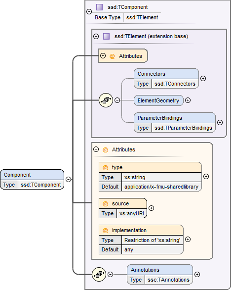
A component is an atomic element of a system (i.e. its internal structure is not specified).
| Attribute | Description |
|---|---|
type |
Optional attribute giving the MIME type of the component, which defaults to |
source |
Optional attribute indicating the source of the component as a URI (cf. RFC 3986). For purposes of the resolution of relative URIs the base URI is the URI of the SSD. Therefore for components that are located alongside the SSD, relative URIs without scheme and authority CAN and SHOULD be used to specify the component sources. For components that are packaged inside an SSP that contains this SSD, this is REQUIRED (in this way, the SSD URIs remain valid after unpacking the SSP into the filesystem). [ For example for an FMU called MyDemoFMU.fmu, that is located in the resources directory of an SSP, the correct URI would be resources/MyDemoFMU.fmu. ] When referencing another SSP, by default the default SSD of the SSP (i.e. When the URI is a same-document URI with a fragment identifier, for example Note that implementations are only REQUIRED to support relative URIs as specified above, and that especially relative URIs that move beyond the baseURI (i.e. go up a level via If the source attribute is missing, this indicates that there is no provided source for the component, indicating a simulation architecture design without complete executable implementation. Implementations CAN take any specified type attribute into account when handling such components. In any other regard implementations CAN treat such components as equivalent to an empty system with the same connectors and other properties as specified for the component. Note that not specifying a source attribute is not the same as specifying a source attribute with an emtpy string value, as that is considered a valid relative URI. Implementations MUST NOT specify an empty relative URI to indicate a missing implementation. |
implementation |
When the referenced component is an FMU that contains multiple implementations [ for example Co-Simulation and Model Exchange], this optional attribute can be used to determine which FMU implementation should be employed. If the attribute is missing or uses the default value any, the importing tool is free to choose what kind of FMU implementation to use. If the value is CoSimulation, ModelExchange, or ScheduledExecution the corresponding FMU implementation MUST be used. It is an error if the specified type of FMU implementation is not present in the FMU. |
5.5. SignalDictionaryReference

A signal dictionary reference is an element of a system that references a signal dictionary, i.e. it is the place-holder of the signal dictionary that allows access to the contents of the signal dictionary through its connectors, which MUST reference signal dictionary entries.
| Attribute | Description |
|---|---|
dictionary |
This required attribute gives the name of the signal dictionary that is to be referenced. Name lookups occur in hierarchical fashion, i.e. the name is first looked up in the system that contains a signal dictionary reference. If that lookup yields no match, the lookup is performed on the enclosing system, etc., until a match is found. It is an error if no matching signal dictionary is found. |
6. System Structure Parameter Values (SSV)
A System Structure Parameter Values (abbreviated SSV) element provides parameter sets for a component or system. The XML element can be inlined with its parent element or referenced from the parent element and supplied as a separate file that is either included within an SSP package or specified as an external URL.
For information on hierarchical naming structure and precedence rules, see Section 5.2.3.
An SSV file MUST be a well-formed XML 1.0 [XML10] file that conforms to the SystemStructureParameterValues XML Schema that is distributed as part of this standard.
The file MUST use the UTF-8 encoding.
All SSV-specific elements live in the http://ssp-standard.org/SSP1/SystemStructureParameterValues namespace, nicknamed ssv.
It is RECOMMENDED that the file extension .ssv be used for stand-alone SSV files.
Except for this file extension recommendation the filename is arbitrary and is independent of variant handling or the names of SSD files.
6.1. ParameterSet
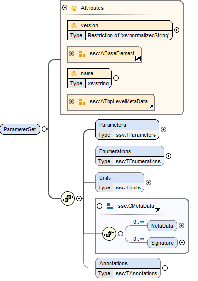
The ParameterSet element contains parameter and meta data information. If the SSV is provided as a separate file, the root element MUST be a ParameterSet element.
| Attribute | Description |
|---|---|
version |
This required attribute specifies the version of this specification that the parameter set conforms to. Only major and minor version number are included, the patch version number MUST NOT be included in this attribute. For the current release this MUST be 1.0. |
name |
This required attribute provides a name which can be used for purposes of presenting the parameter set to the user. |
The following child elements are specified for the ParameterSet element:
| Element | Description |
|---|---|
Parameters |
This required element specifies the parameters in the parameter set. See below for details. |
Enumerations |
This optional element MUST contain definitions for all enumerations referenced in the parameter set. See Section 4.4.1 for its definition. |
Units |
This optional element MUST contain definitions for all units referenced in the parameter set. See Section 4.4.2 for its definition. |
6.2. Parameters

The Parameters element contains a list of individual parameters. If the list is empty, the parameter set SHALL not have any effect on any system or component it is applied to.
It is not required that all parameters included in the Parameters element correspond to parameters available in the components or systems the parameter set is applied to (through ParameterBinding elements in the system structure description). This allows the definition of large parameter data sets out of which only a subset is applied in a given case. See Section 5.2.3 for the semantic defintion of parameter bindings.

The following XML attributes are specified for the Parameter element:
| Attribute | Description |
|---|---|
name |
This required attribute specifies the name of the parameter in the parameter set. The name MUST be unique within the parameter set. |
The following XML child elements are specified for the Parameter element:
| Element | Description |
|---|---|
Real / Float64 / Float32 / |
Exactly one of these elements MUST be present to specify the type of the parameter. See below for details on each type. |
Dimension |
One or more of these optional elements specify the parameter array dimensions, making the parameter an array parameter. See Section 4.5.3 for details. |
The dimensionality of the parameter is given by the presence of one or more Dimension elements.
6.2.1. Real

This type specifies a parameter that represents an IEEE754 double precision floating point number, or an array of such values.
| Attribute | Description |
|---|---|
value |
This required attribute specifies the value of the parameter. |
unit |
This optional attribute gives the name of the unit of the parameter. The name MUST match the name of a unit defined in the Units element in the ParameterSet root element. |
For array parameters, values are specified as a space-separated list of values in row-major order, as specified in FMI.
6.2.2. Float64
This type specifies a parameter that represents an IEEE754 double precision floating point number, or an array of such values.
| Attribute | Description |
|---|---|
value |
This required attribute specifies the value of the parameter. |
unit |
This optional attribute gives the name of the unit of the parameter. The name MUST match the name of a unit defined in the Units element in the ParameterSet root element. |
For array parameters, values are specified as a space-separated list of values in row-major order, as specified in FMI.
6.2.3. Float32
This type specifies a parameter that represents an IEEE754 single precision floating point number, or an array of such values.
| Attribute | Description |
|---|---|
value |
This required attribute specifies the value of the parameter. |
unit |
This optional attribute gives the name of the unit of the parameter. The name MUST match the name of a unit defined in the Units element in the ParameterSet root element. |
For array parameters, values are specified as a space-separated list of values in row-major order, as specified in FMI.
6.2.4. Integer

This type specifies a parameter that represents a 32-bit signed integer, or an array of such values.
| Attribute | Description |
|---|---|
value |
This required attribute specifies the value of the parameter. |
For array parameters, values are specified as a space-separated list of values in row-major order, as specified in FMI.
6.2.5. Int8
This type specifies a parameter that represents a 8-bit signed integer, or an array of such values.
| Attribute | Description |
|---|---|
value |
This required attribute specifies the value of the parameter. |
For array parameters, values are specified as a space-separated list of values in row-major order, as specified in FMI.
6.2.6. UInt8
This type specifies a parameter that represents a 8-bit unsigned integer, or an array of such values.
| Attribute | Description |
|---|---|
value |
This required attribute specifies the value of the parameter. |
For array parameters, values are specified as a space-separated list of values in row-major order, as specified in FMI.
6.2.7. Int16
This type specifies a parameter that represents a 16-bit signed integer, or an array of such values.
| Attribute | Description |
|---|---|
value |
This required attribute specifies the value of the parameter. |
For array parameters, values are specified as a space-separated list of values in row-major order, as specified in FMI.
6.2.8. UInt16
This type specifies a parameter that represents a 16-bit unsigned integer, or an array of such values.
| Attribute | Description |
|---|---|
value |
This required attribute specifies the value of the parameter. |
For array parameters, values are specified as a space-separated list of values in row-major order, as specified in FMI.
6.2.9. Int32
This type specifies a parameter that represents a 32-bit signed integer, or an array of such values.
| Attribute | Description |
|---|---|
value |
This required attribute specifies the value of the parameter. |
For array parameters, values are specified as a space-separated list of values in row-major order, as specified in FMI.
6.2.10. UInt32
This type specifies a parameter that represents a 32-bit unsigned integer, or an array of such values.
| Attribute | Description |
|---|---|
value |
This required attribute specifies the value of the parameter. |
For array parameters, values are specified as a space-separated list of values in row-major order, as specified in FMI.
6.2.11. Int64
This type specifies a parameter that represents a 64-bit signed integer, or an array of such values.
| Attribute | Description |
|---|---|
value |
This required attribute specifies the value of the parameter. |
For array parameters, values are specified as a space-separated list of values in row-major order, as specified in FMI.
6.2.12. UInt64
This type specifies a parameter that represents a 64-bit unsigned integer, or an array of such values.
| Attribute | Description |
|---|---|
value |
This required attribute specifies the value of the parameter. |
For array parameters, values are specified as a space-separated list of values in row-major order, as specified in FMI.
6.2.13. Boolean

This type specifies a parameter that represents a Boolean value, or an array of such values.
| Attribute | Description |
|---|---|
value |
This required attribute specifies the value of the parameter. |
For array parameters, values are specified as a space-separated list of values in row-major order, as specified in FMI.
6.2.14. String
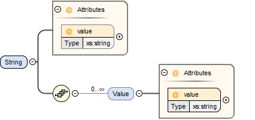
This type specifies a parameter that represents a zero-terminated UTF-8 encoded string, or an array of such values.
| Attribute | Description |
|---|---|
value |
This required attribute specifies the value of the parameter. |
The value of the parameter can alternatively be specified using one or more Value child elements:
| Element | Description |
|---|---|
Value |
One or more of these optional elements provide individual parameter values, as an alternative to the singular value attribute on the String element. |
It is an error if both value attribute and Value child elements are present.
For scalar parameters, or array parameters with a single element, either way of specifying the singular value can be used.
For array parameters with more than one element, values MUST be specified as child elements, with each element providing one element value in row-major order, as specified in FMI.
6.2.15. Enumeration
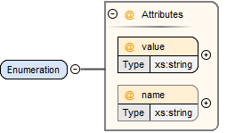
This type specifies a parameter that represents an enumeration value, or an array of such values, as specified by an enumeration definition.
| Attribute | Description |
|---|---|
value |
This required attribute specifies the value of the parameter as the enumeration item name. Note that the actual numeric value this value is mapped to at run time will depend on the item mapping of the enumeration type of the variables being parameterized. |
name |
This optional attribute specifies the name of the enumeration type that the parameter references. If it is supplied, the name MUST match the name of an enumeration type defined in the Enumerations element in the ParameterSet root element. This attribute is optional; if it is not specified, then the list of valid enumeration items with their names and values is not specified, and the interpretation of the enumeration value is left solely to the variables that are being parameterized. If the attribute is specified, implementations MAY use that information for user interface purposes, and/or for additional consistency checking. [ Note: the level of consistency checking is left optional by design, since mandating consistency checking across files requires unified types across files coming potentially from different sources, which is not always realistically possible. ] |
The value of the parameter can alternatively be specified using one or more Value child elements:
| Element | Description |
|---|---|
Value |
One or more of these optional elements provide individual parameter values, as an alternative to the singular value attribute on the Enumeration element. |
It is an error if both value attribute and Value child elements are present.
For scalar parameters, or array parameters with a single element, either way of specifying the singular value can be used.
For array parameters with more than one element, values MUST be specified as child elements, with each element providing one element value in row-major order, as specified in FMI.
6.2.16. Binary
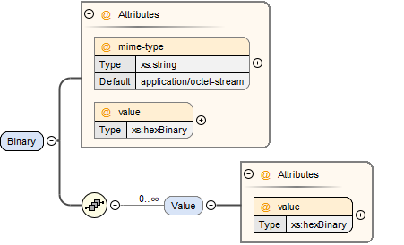
This type specifies a parameter that represents a length-terminated binary data type, or an array of such values.
| Attribute | Description |
|---|---|
value |
This attribute gives the value of the parameter as a hex-encoded binary value. |
mime-type |
This optional attribute specifies the MIME type of the underlying binary data, which defaults to the non-specific |
The value of the parameter can alternatively be specified using one or more Value child elements:
| Element | Description |
|---|---|
Value |
One or more of these optional elements provide individual parameter values, as an alternative to the singular value attribute on the Binary element. |
It is an error if both value attribute and Value child elements are present.
For scalar parameters, or array parameters with a single element, either way of specifying the singular value can be used.
For array parameters with more than one element, values MUST be specified as child elements, with each element providing one element value in row-major order, as specified in FMI.
7. System Structure Parameter Mapping (SSM)
A parameter mapping describes a mapping between the parameters in a parameter source and the actual parameters of a system or component to which the parameters are to be applied. The mapping maps the names of parameters in the source to the names of the parameters in the system or component that are to be parametrized. It can also optionally provide for transformations that are to be applied on the value of the parameters prior to them being applied.
A parameter mapping can be provided either as a stand-alone XML file (an SSM file), which can be referenced from SSD files, or it can be embedded in an ssd:ParameterMapping element of the SSD directly (see Section 5.2.3.2).
An SSM file MUST be a well-formed XML 1.0 [XML10] file that conforms to the SystemStructureParameterMapping XML Schema that is distributed as part of this standard.
The file MUST use the UTF-8 encoding.
All SSM-specific elements live in the http://ssp-standard.org/SSP1/SystemStructureParameterMapping namespace, nicknamed ssm.
It is RECOMMENDED that the file extension .ssm be used for stand-alone SSM files.
Except for this file extension recommendation the filename is arbitrary and is independent of variant handling or the names of SSD files.
The root element of an SSM file MUST be a ParameterMapping element, which contains an arbitrary number of MappingEntry elements.
7.1. ParameterMapping
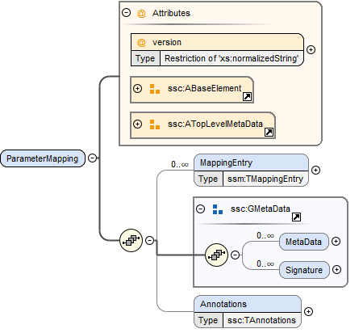
This element describes a parameter mapping, which consists of multiple mapping entries, each describing one parameter mapping (see next section). The parameter mapping MUST contain entries for all parameters that are going to be mapped. All parameters of the parameter source which are not referenced in a mapping entry will not be applied. All parameters that are referenced in a mapping entry will only be applied using the name they are mapped to, i.e. any original name is disregarded for applying parameters. Implementations MUST NOT map multiple parameters to the same name. Implementations CAN map the same parameter to multiple names.
| Attribute | Description |
|---|---|
version |
This required attribute specifies the version of this specification that the parameter mapping conforms to. Only major and minor version number are included, the patch version number MUST NOT be included in this attribute. For the current release this MUST be 1.0. |
7.1.1. MappingEntry
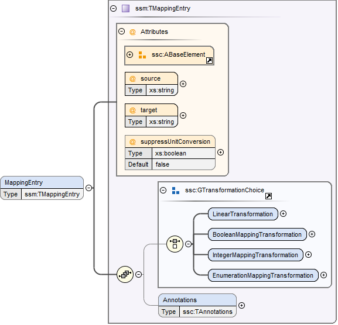
This element specifies a single mapping between a parameter in the source and a parameter of the system or component being parametrized. Through its optional GTransformationChoice element a transformation can be specified that is to be applied to the parameter value prior to its application to its target parameter.
| Attribute | Description |
|---|---|
source |
This required attribute specifies the name of the parameter in the parameter source that is to be mapped to a new name and/or provided with a transformation in this mapping entry. |
target |
This required attribute specifies the name of the parameter in the system or component that is to be parametrized, i.e. that is the target of this mapping entry. |
suppressUnitConversion |
This optional attribute specifies whether automatic conversions between parameter source and its target are performed using unit information potentially available for both value and target definitions.
If this attribute is supplied and its value is true, then the environment will not perform any automatic unit conversions, otherwise automatic unit conversions can be performed. |
The following XML child elements are specified for the MappingEntry element:
| Element | Description |
|---|---|
LinearTransformation / BooleanMappingTransformation / IntegerMappingTransformation / EnumerationMappingTransformation |
Specifies an optional transformation for the mapping. If any, exactly one of these elements MUST be present to specify the type of the transformation. See Section 4.5.2 for details. |
8. System Structure Signal Dictionaries (SSB)
A signal dictionary is a collection of signals defined through its DictionaryEntry elements.
A signal dictionary can be provided either as a stand-alone XML file (an SSB file), which can be referenced from SSD files, or it can be embedded in an ssd:SignalDictionary element of the SSD directly (see Section 5.3.3).
An SSB file MUST be a well-formed XML 1.0 [XML10] file that conforms to the SystemStructureSignalDictionary XML Schema that is distributed as part of this standard.
The file MUST use the UTF-8 encoding.
All SSB-specific elements live in the http://ssp-standard.org/SSP1/SystemStructureSignalDictionary namespace, nicknamed ssb.
It is RECOMMENDED that the file extension .ssb be used for stand-alone SSB files.
Except for this file extension recommendation the filename is arbitrary and is independent of variant handling or the names of SSD files.
The root element of an SSB file MUST be a SignalDictionary element, which contains an arbitrary number of DictionaryEntry elements. Any enumerations or units used in the DictionaryEntry elements MUST be declared within the Enumerations and Units child elements of the SignalDictionary.
8.1. SignalDictionary
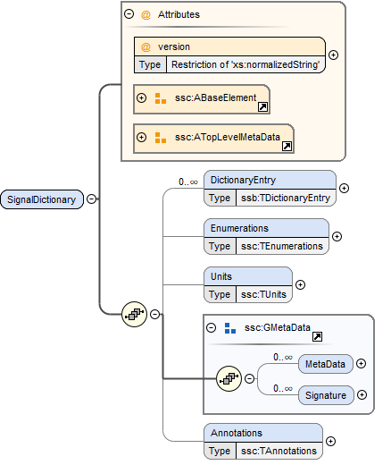
This element describes a signal dictionary, which consists of one or more dictionary entries, each describing one signal in the signal dictionary (see next section).
| Attribute | Description |
|---|---|
version |
This required attribute specifies the version of this specification that the parameter mapping conforms to. Only major and minor version number are included, the patch version number MUST NOT be included in this attribute. For the current release this MUST be 1.0. |
The following XML child elements are specified for the SignalDictionary element:
| Element | Description | |
|---|---|---|
DictionaryEntry |
One or more entries of the signal dictionary. |
|
Enumerations |
This optional element MUST contain definitions for all enumerations referenced in the signal dictionary. |
|
Units |
This optional element MUST contain definitions for all units referenced in the signal dictionary. |
8.1.1. DictionaryEntry
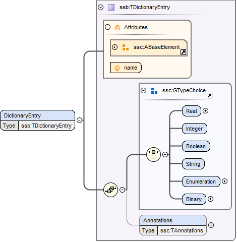
A dictionary entry defines a single signal in the signal dictionary.
| Attribute | Description |
|---|---|
name |
Required attribute giving the signal dictionary entry a name, which shall be unique within the signal dictionary. |
The following XML child elements are specified for the DictionaryEntry element:
| Element | Description |
|---|---|
Real / Float64 / Float32 / |
Exactly one of these elements MUST be present to specify the type of the signal dictionary entry. See Section 4.5.1 for details. |
Dimension |
One or more of these optional elements define the signal dictionary entry array dimensions, making the signal dictionary entry an array signal dictionary entry. See Section 4.5.3 for details. |
9. Literature
[RFC2119] IETF: RFC 2119 - Key words for use in RFCs to Indicate Requirement Levels. IETF Best Current Practice BCP 14. 1997.
https://www.ietf.org/rfc/rfc2119.txt
[ZIP635] PKWARE Inc.: APPNOTE.TXT - .ZIP File Format Specification, Version 6.3.5. 2018.
https://pkware.cachefly.net/webdocs/APPNOTE/APPNOTE-6.3.5.TXT
[SV200] Preston-Werner, T.: Semantic Versioning 2.0.0. 2013.
https://semver.org/spec/v2.0.0.html
[XML10] World Wide Web Consortium: Extensible Markup Language (XML) 1.0 (Fifth Edition). W3C Recommendation. 2008.
http://www.w3.org/TR/2008/REC-xml-20081126/
[FMI20] Modelica Association: Functional Mock-up Interface for Model Exchange and Co-Simulation, Version 2.0.3. 2021.
https://github.com/modelica/fmi-standard/releases/download/v2.0.3/FMI-Specification-2.0.3.pdf
[OSMP120] ASAM e.V.: OSI Sensor Model Packaging Version 1.2.0. 2021.
https://github.com/OpenSimulationInterface/osi-sensor-model-packaging/releases/tag/v1.2.0